When Gallup released its annual governance survey in October 2026, one number stopped observers cold. Only 51% of Americans now express a "great deal" or a "fair amount" of trust in the American people as a whole to make judgments about the issues facing the country. In 1976, just two years after Richard Nixon resigned in disgrace, that figure stood at 86%. Across half a century of Gallup polling, no reading has ever been lower; the full series is in the survey's topline. Cynicism toward politicians (trusted by just 42%) and the press (33%) is a familiar American habit. Losing faith in one another is something altogether new—and far more dangerous.
The milestone is ominous because, as Axios put it, "Americans are losing faith in their fellow voters," not only in their leaders. Confronted with this erosion, commentators usually reach for an intuitive culprit. As economist Noah Smith put it: "Social media really messes with liberal democracy." It is a seductive, almost comforting diagnosis. If smartphones and algorithmic feeds have scrambled our civic judgment, then the underlying architecture of the republic remains sound; repair the digital wiring, and civic peace will return.
The empirical record tells a different story, beginning with a cross-national puzzle. The United States is not the most polarized democracy in the world, but it has polarized faster than almost any of its peers. When economists Levi Boxell, Matthew Gentzkow, and Jesse Shapiro tracked partisan hostility across twelve advanced democracies over four decades, they found that animus surged more dramatically in the United States than anywhere else, and declined in six of the twelve countries over the years their surveys cover. Every rich democracy got the commercial internet, the smartphone, and the China trade shock at about the same time. Technology on its own cannot explain why America pulled apart fastest.
To weigh the competing explanations, this essay puts each of them to three empirical tests:
- Timing: A genuine cause must precede the consequence it purports to explain.
- Causal Identification: Any serious account must separate the true effect of an alleged driver from the self-selection of the people drawn to it, relying on randomized experiments and natural shocks rather than raw correlations.
- Cross-National Fit: A shock common to every rich democracy cannot, on its own, explain why only some of them polarized—though it could still matter where parties and institutions differ.
The record does not show sudden algorithmic poisoning. It shows something older and deeper: a society splitting over change itself. Every democracy argues about two different things. The first is economic: how much inequality to accept, and how much the state should do about it. The second is about change: whether to prize order, tradition, and continuity, or openness, autonomy, and the new. For most of the twentieth century the line between America's parties ran along the first. Over the past fifty years it turned toward the second. This essay calls that turn The Great Rotation, and argues that openness to change, or resistance to it, has become the key determinant of American polarization.
Until then, race, religious observance, educational attainment, and geography cut across the partisan divide. Northern and Southern Democrats held irreconcilable views on racial hierarchy; Wall Street moderates and Main Street conservatives contested the soul of the Republican Party. Then four societal cleavages—race, religion, education, and place—slid one after another into alignment behind the two major parties, while the old divide of economic class faded. A party label ceased to denote a mere preference on marginal tax rates or regulatory scope; it came to signify a comprehensive cultural, moral, and geographic identity.
The four divides are not four stories. Each marks where an American stands toward the changes remaking the country: a population growing more diverse, a religious nation growing more secular, an economy that rewards credentials, and prosperity concentrating in the big metropolitan regions. The same stance runs through nearly every issue that now divides the parties: immigration, trade and the loss of manufacturing, trust in scientists and other experts, and, most starkly, the pandemic. Two survey questions about change, on immigration and on confidence in science, predict a partisan's party better than race, religion, education, and place combined, and they account for more than half of the gap between graduates and non-graduates and about half of the gap between small towns and cities—though not the racial gap, which has a history of its own.
The mechanism has three layers. At the core is a national dispute between openness to change and tradition. When technological and economic change outruns part of a society's ability to adapt, the society divides into those who embrace change and those who are left behind by it or resist it. The Republican coalition has become the home of tradition and of many Americans the changes left behind; the Democratic coalition, the home of Americans who live inside the change or have made their peace with it. Around that core, amplifiers—partisan media, social media, and polarized party elites, working inside a winner-take-all two-party system—organize the dispute into two camps and sharpen it. At the edges of each camp, radical wings turn opposing worldviews into radical remedies, and the camps into warring armies.
Neither wing is what its name suggests. MAGA is not conservative, and it does not simply resist change: tariffs at a level not seen since the 1930s, a purge of the civil service, and deportation at scale are radical means to restorative ends. That is reaction, not conservatism. On the other side, the progressive vanguard often called "woke" does not merely embrace change; it accelerates it, through new norms of language, identity, and conduct that are sometimes enforced by institutions and social sanction. Each wing's excesses are the other's best recruiting material, although most Americans belong to neither. Like a teenager's rebellion, both mistake defiance for agency and leave their own followers, and the country, worse off: the problems are real, but the solutions are imaginary, as I argued in The Great Temper Tantrum. Meanwhile change will not stop, and artificial intelligence is likely to make it faster.
Because the amplifiers and the wings sit on top of the core dispute rather than beneath it, the remedies usually proposed—electoral reform, civility campaigns, better feeds—can lower the temperature but cannot end the dispute; their effects are likely to be modest. The biggest lever would be the pace of change itself, and it is the one lever no country can pull very far. A companion paper weighs this account against two others that fit much of the same evidence, one led by party elites and activists and one accelerated by media. Section 4 sets out the core dispute and where the evidence for it is strong and thin; Sections 2, 5 and 7 the amplifiers; and Section 10 the radical wings.
Once the divides stacked atop one another, political rivals stopped looking like fellow citizens with mistaken economic theories and began looking like existential threats to one's way of life. Today, an electoral machinery dominated by uncompetitive safe seats and low-turnout primaries rewards political entrepreneurs who stoke that dread. In that self-sustaining loop, the public's collapsing faith in fellow voters becomes understandable: it may be, in part, a verdict on the candidates our neighbors keep electing, even if it rests on an incomplete picture of what those neighbors actually believe.
1. What has changed, and what has not
Much of the confusion surrounding American polarization persists because a single word is routinely used to describe four distinct phenomena: policy disagreement among ordinary citizens, the sorting of social identities and ideologies into party camps, mutual emotional hostility between partisans, and legislative divergence among elected officials. Separating these four threads reveals a striking pattern: party and ideology came into close alignment while moderate self-identification remained common. Self-labels cannot rule out changes in policy views, but the clearest change is that Americans sorted their identities into rival camps.
Vigorous disagreement over tax rates, healthcare, and regulation is not the enemy of self-government; negotiating competing interests is the very purpose of democratic politics. The pathology begins when partisanship fuses with social identity, turning rivals into moral enemies. The clearest barometer of that psychological shift is the American National Election Studies (ANES) "feeling thermometer," which since 1978 has asked partisans to rate both parties on a scale from 0 (coldest) to 100 (warmest). The decisive clue lies in which line moved.
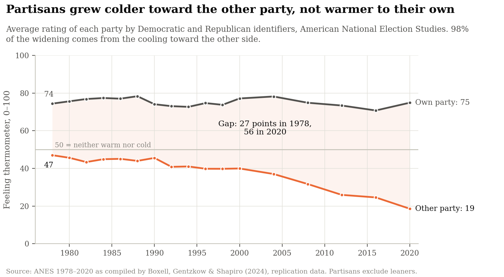
Fig. 1 — Almost all of the widening comes from cooling toward the other side. Source: ANES 1978–2020, from the replication files of Boxell, Gentzkow & Shapiro (2024). The 2024 study shows no retreat: 21 for the other party and 70 for one's own, among partisans including leaners (University of Arizona Voter Project).
Over more than four decades, Americans have not grown any fonder of their own party; in-party warmth has hovered near 75 since the late 1970s (Figure 1). Instead, feelings toward the opposing party plunged from a lukewarm 47 in 1978 to an icy 19 in 2020, which accounts for 98% of the widening gap (28.4 of its 28.9 points). This is what political scientists call negative partisanship: today's coalitions are bound together less by affection for their own leaders or platform than by shared loathing of the alternative. "Republicans and Democrats increasingly dislike, even loathe, their opponents," as Shanto Iyengar and colleagues put it in 2012.
That antipathy has spilled out of the voting booth and into intimate social life.
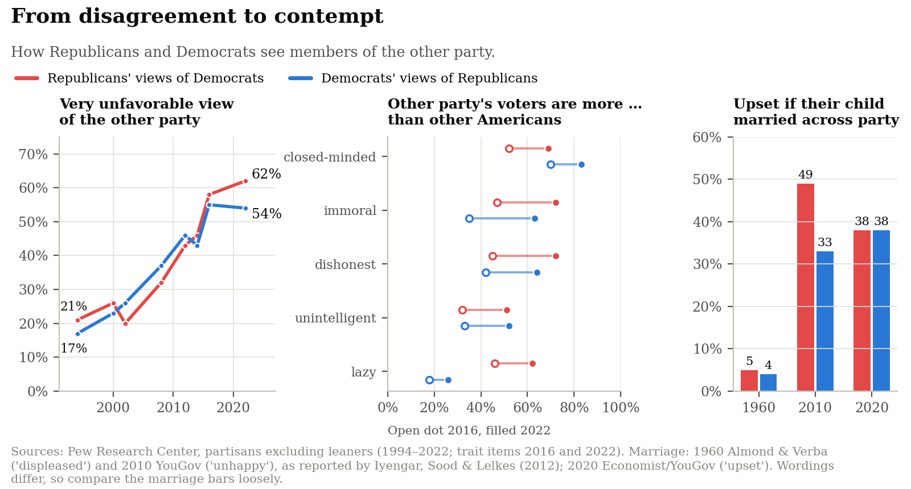
Fig. 2 — In 1960, 5% of Republicans and 4% of Democrats said they would be displeased if their child married across party lines; by 2010, 49% and 33% said so (wordings differ across these surveys). Sources: Pew Research Center, 2022; Iyengar, Sood & Lelkes (2012); YouGov, 2020.
In 1960, fewer than one partisan in twenty cared whether their child married across party lines; by 2010, a third of Democrats and half of Republicans said they would be unhappy about it, and in 2020, 38% in each party said they would be upset (Figure 2; the wordings differ). Moral condemnation has escalated just as sharply. Between 2016 and 2022 alone, Pew Research Center surveys found that the share of Republicans calling Democrats more immoral than other Americans surged from 47% to 72%, while the share of Democrats saying the same of Republicans jumped from 35% to 63%.
Did this emotional chasm open because ordinary voters adopted extreme policy views? Self-described ideology suggests that is at most part of the story. The congressional record, which reaches back much further than the surveys, shows the parties in Washington pulling apart from the late 1970s.
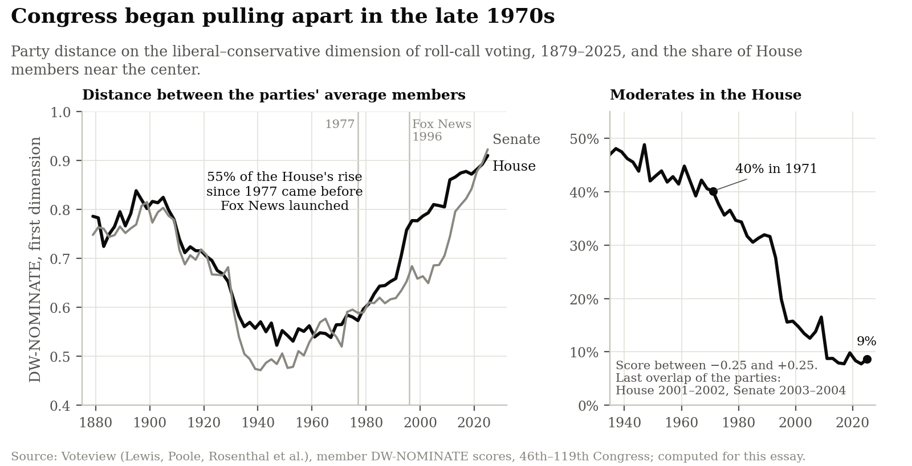
Fig. 3 — More than half (55%) of the House's widening since 1977 came before Fox News launched in 1996, and moderates fell from 40% of the House in 1971 to 9% in 2025. Source: Voteview member scores; computed for this essay.
Measured by DW-NOMINATE scores—which place every congressional roll-call vote on a liberal-to-conservative scale—legislative polarization reached its twentieth-century low in the 1940s and stayed muted through the 1960s (Figure 3). The modern divergence began in the late 1970s. Centrist lawmakers (those scoring between −0.25 and +0.25) accounted for 40% of the House in 1971; by 2025, they had dwindled to 9%. The ideological distributions of the two parties last overlapped in the House in 2001–02 and in the Senate in 2003–04.
Among ordinary voters, however, self-described ideological extremism grew only modestly.
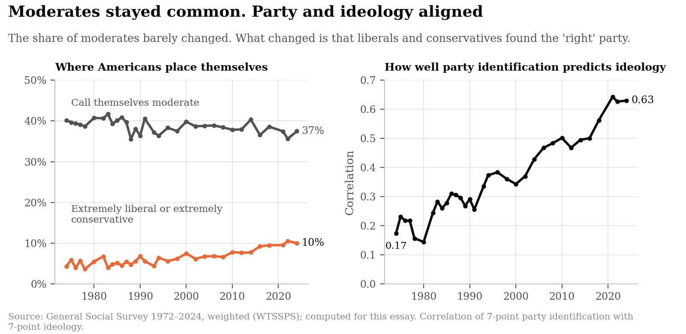
Fig. 4 — Moderates were 40% of Americans in 1974 and 37% in 2024, while the correlation between party and ideology rose from 0.17 to 0.63: moderate self-identification stayed common as party and ideology aligned. Source: General Social Survey, weighted; computed for this essay.
Across fifty years of the General Social Survey, the share of Americans calling themselves political moderates held remarkably steady, slipping only from 40% in 1974 to 37% in 2024; the share calling themselves extremely liberal or extremely conservative rose from 4% to 10% (Figure 4). Self-placement is an imperfect gauge of policy views: the meanings of "moderate," "liberal" and "conservative" shift over time, and the extremes did grow. Meanwhile the correlation between party identification and self-reported ideology more than tripled, rising from 0.17 to 0.63, and liberal Republicans and conservative Democrats became rare. Partisan alignment increased sharply while moderate self-identification remained common; the issue questions in Section 3 show that the parties' gaps on specific policies widened as well (see Appendix A for formal definitions and the Fiorina–Abramowitz debate).
As this sorting hardened, public trust collapsed in two distinct waves separated by three decades.
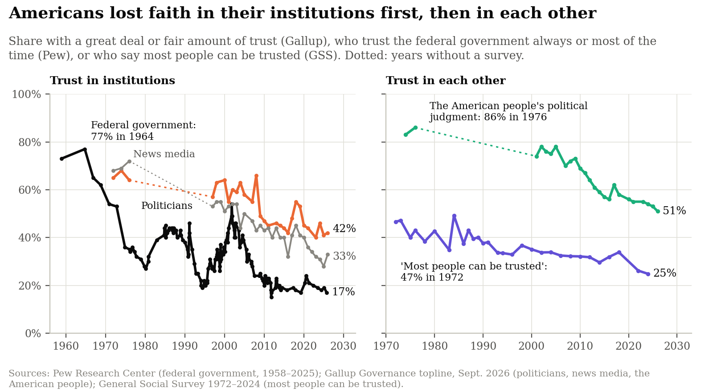
Fig. 5 — Trust in the federal government fell from 77% in 1964 to about a quarter by 1980, through Vietnam, Watergate and stagflation, and is 17% today. The share saying most people can be trusted fell from 47% in 1972 to 25% in 2024. Sources: Pew Research Center; Gallup Governance topline, September 2026; General Social Survey.
The first collapse was vertical: battered by Vietnam, Watergate, and 1970s stagflation, public trust in the federal government plunged from 77% in 1964 to roughly a quarter by 1980, before drifting down to 17% today (Figure 5). That institutional crash came before the thermometer gap began its steep climb in the 1990s, so rising partisan hostility is unlikely to explain it. The second collapse was horizontal, and it shows up in two related but distinct measures. Interpersonal trust—the General Social Survey's question whether "most people can be trusted"—eroded from 47% in 1972 to about a quarter in 2024 (the exact recent level depends on how the question was asked; see the Methods and Data appendix). Confidence in the American people's political judgment, which Gallup measures, stayed at 70% or higher through 2009 and fell steeply after that. The first asks whether strangers will treat you fairly; the second asks whether your fellow citizens choose wisely at the ballot box. Section 9 returns to the second.
2. The usual suspects: cable news and social media
Popular commentary blames this civic unraveling almost reflexively on media technology: 24-hour partisan cable news, algorithmic social feeds, and smartphone notifications. Digital media may intensify political hostility, distort perceptions, and reward factional entrepreneurs. But on all three tests—timing, causal identification, and cross-national fit—they arrived too late, and moved hostility too little in experiments, to explain the origins of the central trends examined here.
The most immediate problem is chronology. A cause cannot arrive decades after its supposed effect is already well underway.
![The timing test: most of the change came before the feed. Six small line charts of how much of each trend's total change had happened by each year, with the years since 2011 shaded: by 2011, distrust of government was 96% complete, House polarization 84%, interpersonal distrust 71%, sorting 67%, coldness toward the other party 72% (the in-party minus out-party gap 73%), and distrust of the people's judgment 55%. Dots show single readings. A bottom panel shows internet, social media and smartphone adoption rising mostly after 2000.](polarization-timing-test.png)
Fig. 6 — How much of each trend's total change had happened by each year; shading marks the years since a majority of adults used social media; dots are single readings. The feelings panel shows both coldness toward the other party and the in-party minus out-party gap. A descriptive chronology, not a measure of causes. Sources: Pew, Voteview, GSS, ANES and Gallup; computed for this essay.
Tracking each trend from its modern baseline to its latest reading shows that several were well under way before contemporary social media existed (Figure 6; see Table B.1 in Appendix B for exact milestones):
- Distrust of the federal government had already completed half of its modern rise by 1973, 84% by the time Fox News went on the air in October 1996, and 96% by 2011, the year a majority of American adults first used social media.
- Polarization in Congress crossed its halfway mark by 1994—two years before Fox News or MSNBC launched—reached 59% by 1996, and was 84% complete by 2011, when smartphone ownership stood near 35%.
- Generalized social distrust was half complete by 1992 and 71% complete by 2011.
- Party–ideology sorting crossed its halfway mark by 2004—the year Facebook was founded in a college dorm room—and was 67% complete by 2011.
- Coldness toward the other party was half complete by 2006 and 72% complete by 2011; the in-party minus out-party gap, which also counts feelings toward one's own party, was 73% complete. Its change between 2006 and 2011 was faster than in the decade before, so the feed era is not irrelevant to the later part of the rise.
These shares describe a chronology, not causes. Each is a share of the net change between two smoothed endpoints; the year half of adults used social media is not the year exposure began; and centered smoothing uses readings from after each date. What the timing establishes is that several of these trends began well before contemporary social media; it cannot say how much of the later rise social media caused.
Partisan cable news did leave a measurable footprint. Exploiting the staggered rollout of Fox News across local cable systems, Stefano DellaVigna and Ethan Kaplan found that it shifted towns 0.4 to 0.7 percentage points toward Republicans in 2000, and Elliott Ash and colleagues find that it has raised Republican vote shares by at least half a point in recent elections. Yet by the most careful structural estimates, cable news can plausibly account for the public's modest rise in ideological polarization, not the far faster polarization of Congress; its clearest documented effect on politicians is that House members whose districts got Fox became less supportive of President Clinton. And it arrived two decades after the congressional parties began pulling apart.
The demographic pattern points the same way. If algorithmic feeds and online echo chambers were the primary engine of polarization, the heaviest users—young, digitally native adults—should have polarized fastest.
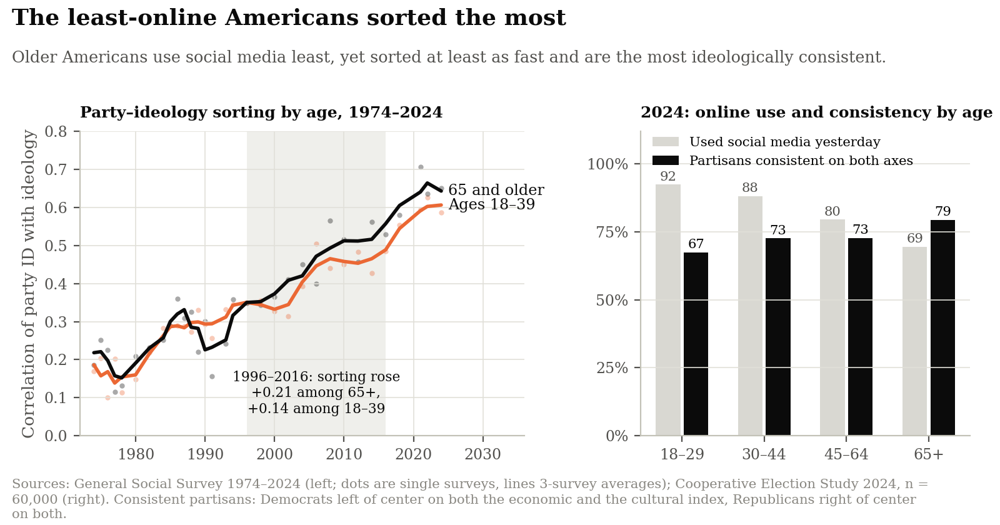
Fig. 7 — In 2024, 92% of 18- to 29-year-olds had used social media the day before, against 69% of those 65 and older, yet the oldest were the most ideologically consistent. Sources: GSS; Cooperative Election Study 2024; computed for this essay.
The data do not fit that prediction (Figure 7). Between 1996 and 2016, the correlation between party and ideology in the GSS rose more among Americans aged 65 and older (+0.21) than among those aged 18 to 39 (+0.14), though the difference between the two increases is within sampling error. On an index of eight polarization measures over the same period, Boxell, Gentzkow, and Shapiro found that polarization grew about twice as fast among seniors (+0.47 index points) as among young adults (+0.23)—precisely the cohort least plugged into digital media. In the 2024 Cooperative Election Study, 92% of 18-to-29-year-olds reported using social media the previous day compared with 69% of seniors, yet 79% of partisans aged 65 and older held consistently left-of-center or right-of-center views across both economics and culture, compared with 67% of young adults. Age comparisons mix the effects of age, generation and the times people grew up in, so they cannot by themselves rule out a media effect; they do show that the least-online group is not the least sorted.
Cross-national comparisons point the same way. Every wealthy democracy adopted broadband internet, smartphones, and social networks during the same historical window, yet their civic trajectories diverged sharply.
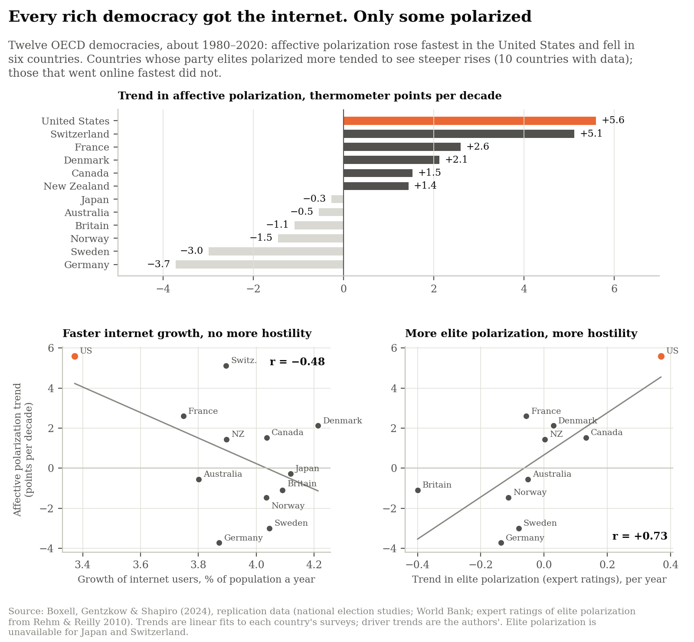
Fig. 8 — Hostility rose fastest in the United States, which had the slowest growth in internet use of the twelve, and fell in six countries. Source: replication data of Boxell, Gentzkow & Shapiro (2024); correlations computed for this essay.
Among twelve OECD democracies tracked from roughly 1980 to 2020, the United States experienced the steepest increase in partisan hostility (+5.6 thermometer points per decade) despite recording the slowest growth in internet use over the period; across the twelve, faster internet growth went with less rising hostility (r = −0.48, though with an interval that includes zero; Figure 8). In half of the countries—Japan, Australia, Britain, Norway, Sweden, and Germany—affective polarization actually fell as citizens went online. The strongest association was not with internet adoption but with whether a country's party elites pulled apart (r = +0.73 across the ten countries with data), a relationship Section 5 examines with due caution.
Randomized experiments give a more nuanced picture. The studies considered here are those that randomly changed what US users saw on social media, or took them off it, and reported effects on affective polarization, published or posted by October 2026. Before the 2018 midterms, economists paid Facebook users to deactivate their accounts for four weeks. During the 2020 election, academic teams partnered with Meta to run large randomized trials across tens of thousands of Facebook and Instagram users—switching feeds to reverse-chronological order, stripping out reshared posts or down-ranking like-minded partisan sources for about three months, or paying users to deactivate their accounts for six weeks. Two newer studies changed feeds without the platforms' cooperation.
![Changing the feed moves partisan dislike, but only a little. Top: dot chart of eight randomized experiments on social media; every estimated effect on affective polarization lies within about 0.06 standard deviations of zero, one is significant before but not after the study's adjustment for multiple outcomes, and a 2024 preprint reports −0.03 standard deviations. Bottom: in thermometer points, changing exposure to hostile posts on X moved feelings toward the other party by more than 2 points and alternative feed rankers by 1.5 points, against a 28.9-point rise in the ANES gap from 1978 to 2020.](polarization-experiments.png)
Fig. 9 — Most estimates are within a few hundredths of a standard deviation of zero. Newer experiments find small but detectable effects—about 2 thermometer points from changing exposure to hostile posts—against a 29-point rise since 1978. Sources: Allcott et al. (2020), Allcott et al. (2024), Guess et al. (2023), Nyhan et al. (2023), Piccardi et al. (2025), Stray et al. (2026, preprint).
The 2018–2020 experiments found small effects on affective polarization: every point estimate lies within about 0.06 standard deviations of zero (Figure 9). One—quitting Facebook for six weeks in 2020—reduced it by 0.03 standard deviations, significant before but not after the study's adjustment for testing many outcomes. Deactivating Facebook or changing its feed altered news knowledge and time on the platform far more than it altered partisan feeling. The newer studies show that feed design can move hostility. In a ten-day experiment on X during the 2024 campaign, reranking feeds to show more or fewer posts expressing partisan animosity shifted feelings toward the other party by more than 2 points on the 100-point thermometer. And in a six-month experiment across Facebook, Reddit and X, still a preprint, alternative ranking algorithms reduced affective polarization by 0.03 standard deviations, including a 1.5-point narrowing of the thermometer gap. Those effects are real but small next to the 29-point rise in that gap since 1978; and experiments lasting days to months cannot measure what years of exposure might do.
None of this absolves social media platforms of civic harm. Out-group animosity is uniquely lucrative online: in a study of millions of Facebook and Twitter posts, each word referencing the political out-group raised the odds that a post would be shared by roughly 67%, and in a 2026 study of X, switching on the platform's ranking algorithm shifted users' political attitudes within weeks, even though it left partisan dislike unchanged. Digital platforms warp perceptions of public opinion and help insurgent politicians raise money and attention outside party gatekeepers. The evidence supports a narrower conclusion than either "social media did it" or "social media is harmless": social media is unlikely to be the original or a sufficient explanation of America's long-run polarization, but what feeds show can move partisan hostility, and the platforms may well amplify it. Media are amplifiers: they organize and sharpen a dispute whose roots lie elsewhere. To find those roots, we must look beneath the screen, at how Americans have met half a century of change.
3. The Great Rotation: which divides moved, and which faded
In the mid-twentieth century, knowing whether an American voted Democratic or Republican revealed remarkably little about how they worshiped, how far they had gone in school, where they lived, or where they stood on racial equality. Both parties were sprawling, internally contradictory coalitions. The New Deal Democratic majority held together Southern segregationists and Northern urban labor liberals; the Republican Party bridged Main Street Midwestern conservatives and Wall Street Northeastern moderates. Because race, religion, education, and geography cut across party lines, social life moderated political conflict. Your opponent on tax rates might sit beside you in church on Sunday or send their children to the same rural school.
Over the past half-century, that changed in two ways at once. Cultural divides lined up behind the parties: race first, then religion, then education and place. Meanwhile economic class, the divide that had organized the New Deal party system, stopped predicting party. The line between the parties did not simply harden where it was. It turned, from class toward culture. Alan Abramowitz calls the end state The Great Alignment; this essay calls the process the Great Rotation.
Two arguments, one line
Political psychologists keep finding the same two axes beneath Americans' opinions. Reviewing five decades of research, John Jost and colleagues concluded that "the core ideology of conservatism stresses resistance to change and justification of inequality": one axis about change, the other about equality. Shalom Schwartz's map of human values, drawn from surveys in 20 countries, sets "openness to change" against "conservation." John Duckitt traces the cultural axis to a worldview that sees the world as dangerous and so prizes security and conformity, a link that Chris Sibley, Marc Wilson and Duckitt tested over five months; Marc Hetherington and Jonathan Weiler, in Prius or Pickup?, call its two poles "fixed" and "fluid." Among the Big Five personality traits, openness to experience is one of the most consistent predictors of liberal views, and Alan Gerber and colleagues find that personality often predicts ideology as strongly as education or income does.
The two axes are distinct. A churchgoing union electrician can want both a generous welfare state and traditional morals; a banker can want low taxes and open borders. Stanley Feldman and Christopher Johnston conclude that at least two dimensions are needed to describe Americans' policy views. For most of the twentieth century, both of those people had a home in either party, because the parties divided mainly along the economic axis; in Congress, Keith Poole and Howard Rosenthal found that a second dimension, over race and civil rights, split members by region from about 1937 to 1970 and then faded as the parties absorbed it. The Great Rotation is the turn of the party line from the first axis toward the second: from an argument about how to share the gains of a stable economy to an argument about openness, change, and who belongs (Figure 10). The rest of this section measures that turn through the social groups that moved; Section 4 argues that what those groups have in common is their stance toward change.
![The Great Rotation, a schematic. Two panels with an economic axis running from equality to markets and a vertical axis running from openness and change at the bottom to order, tradition and continuity at the top. Before about 1975, each party spans the vertical axis: Southern and Northern Democrats on the left, Goldwater and liberal Republicans on the right, with a vertical dotted line between the parties. Today Democrats sit in the open, equality corner and Republicans in the traditional, markets corner; the dotted line runs along the diagonal, and the populist and libertarian corners are labeled cross-pressured.](polarization-rotation-schematic.png)
Fig. 10 — A schematic of the Great Rotation. Before the 1970s each party held both traditionalists and modernizers, and the line between the parties ran along the economic axis. Today it runs along the diagonal: the party of order and tradition is also the party of markets, and the two off-diagonal corners are cross-pressured. Measured in the General Social Survey, the line between the parties' average positions turned from 12° to 31°, not all the way to the diagonal (see the Methods and Data appendix, S4.11).
Testing the divides instead of choosing them
Any short list of divides invites the question: why these? To avoid choosing the ones that fit the story, this section starts from a list fixed in advance by the classic theory of social cleavages. Seymour Martin Lipset and Stein Rokkan traced Western party systems to four old conflicts: owners against workers, church against state, countryside against city, and the national center against its periphery (in America, the South). To those four the list adds race, education, gender, age and family status, and, where the General Social Survey asked about them, gun ownership, union membership, birthplace and military service. That makes 23 characteristics. Nine of them are fixed by birth or upbringing, such as race or the religion someone was raised in, so adult partisanship cannot have shaped them.
Figure 11 shows how much each characteristic split the parties in the 1970s and how much it splits them now.
![The divides that moved, and the one that faded. Arrow chart of 23 characteristics, showing how much more Republican partisans with each characteristic were than those without it in the 1970s and in 2021–24. Class characteristics move toward zero: calling oneself middle or upper class from +15 to 0 points, top income third from +10 to +3, self-employed from +10 to +6, union household from −14 to −9. Cultural characteristics move toward the Republicans: gun in the household from +7 to +29, fundamentalist denomination from −7 to +19, weekly attendance from +3 to +19, no four-year degree from −11 to +14, father without a degree from −18 to +12, small town or countryside from +8 to +21, married from +6 to +14, children from +3 to +16, born in the United States from +1 to +18, veteran from 0 to +14. Having no religion moves from −7 to −26 and being a woman from −1 to −10. White moves from +25 to +34.](polarization-divides-all.png)
Fig. 11 — Each arrow runs from the 1970s to 2021–24. Characteristics in italics are fixed by birth or upbringing. Source: General Social Survey, weighted; computed for this essay.
Three patterns stand out.
- Cultural divides opened. In the 1970s, partisans with a gun at home were 7 points more Republican than those without one; now they are 29 points more Republican. Members of fundamentalist Protestant denominations went from 7 points less Republican than other partisans to 19 points more. The same shift appears for weekly churchgoers (3 points to 19), people without a four-year degree (−11 to +14), residents of small towns and the countryside (8 to 21), married people (6 to 14), parents (3 to 16), the native-born (1 to 18) and veterans (0 to 14). On the other side, Americans with no religion went from 7 to 26 points less Republican, and women from 1 to 10 points.
- The class divide faded. In the 1970s, partisans who called themselves middle or upper class were 15 points more Republican than those who called themselves working or lower class. By 2021–24 there was no difference at all. The top third of earners went from 10 points more Republican to 3, the self-employed from 10 to 6, and union households from 14 points less Republican to 9. Most of this fading came after 2014, and it shows up equally among people interviewed in person and online.
- Race stayed the widest divide. It was already the largest in the 1970s (25 points) and widened modestly (34 points).
Many of these characteristics travel together. Evangelicals are disproportionately white, Southern and rural, for example, so their gaps overlap. To see which divides carry weight of their own, the analysis puts all of them into one model and asks a simple question: how much does knowing each set of characteristics improve a prediction of whether a partisan is a Republican? The model is judged on respondents it has not seen, and credit is shared out fairly among the sets (by Shapley values: each set's average gain when added to every possible combination of the others). The measure does not care about direction. A trait that predicts Democratic identification earns as much credit as one that predicts Republican identification.
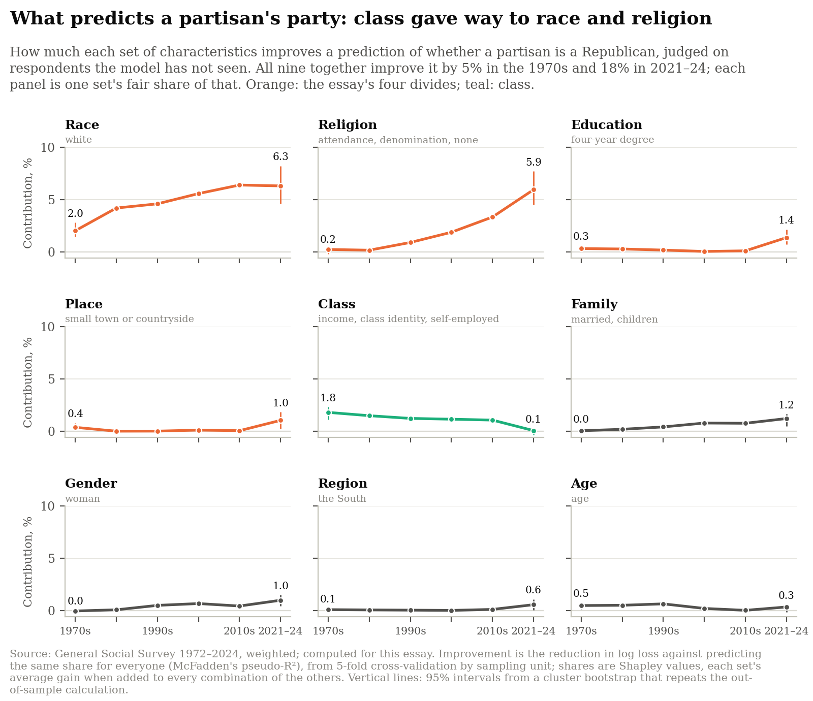
Fig. 12 — All nine sets together improve the prediction of party by 5% in the 1970s and 18% in 2021–24; each panel shows one set's share. Source: General Social Survey, weighted; computed for this essay; method in the Methods and Data appendix.
Figure 12 gives the answer.
- Social position predicts party far better than it used to. All nine sets together improve the prediction by 5% in the 1970s and by 18% in 2021–24. That is still modest. Demography is not destiny, and most of the uncertainty about any one partisan remains.
- In the 1970s, race and class did nearly all the work, in roughly equal measure (38% and 34% of the total). In 2021–24, race (35%) and religion (33%) dominate. Education (8%), family status (7%), place (6%) and gender (6%) follow. Class contributes almost nothing (under 1%), and its decline is clear of sampling error.
- Race counts for more partly because more people sit on each side of it. The race gap widened only modestly, but the nonwhite share of partisans doubled, from 12% to 24%, and a divide predicts more when it splits the population more evenly. Religion's contribution rose for two reasons: the gaps widened, and Americans with no religion grew from 6% to 25% of partisans.
- Guns are a strong fifth marker. The question was asked of only about two-thirds of respondents, so it is tested separately. Added to the model, gun ownership ranks third of ten sets in 2021–24, with 19% of the total, up from sixth (3%) in the 1970s. Union membership moves the other way, from third (18%) to seventh (3%).
Why these four divides
The scan largely vindicates the four divides this essay follows: race, religion, education and place. Race, religion and education are the three strongest sets today. Family status, place and gender come next, nearly tied, and place's gain since the 1970s is too small to separate from sampling error once the other divides are held fixed. Together the four reproduce 86% of the predictive power of all nine sets in 2021–24, against 65% in the 1970s, when class still mattered.
The scan also amends the story in two ways. First, religion is better measured by denomination and secularism as well as by attendance. The simple four-trait count used later in this section, which measures religion by attendance alone, captures about three-fifths (62%) of the full model's power. Second, the rotation has a second half that the four divides leave out: economic class stopped predicting party. As recently as the 2000s, richer voters were reliably more Republican, especially in poorer states, as Andrew Gelman showed in Red State, Blue State, Rich State, Poor State. In the General Social Survey, the top third of earners was 11 to 17 points more Republican in every survey from 2004 to 2014. That gap has all but vanished. Half of this pattern is familiar: the more educated moving left is what Amory Gethin, Clara Martínez-Toledano, and Thomas Piketty find across Western democracies and what Herbert Kitschelt and Philipp Rehm trace among white Americans. The other half goes further than Gethin and his colleagues found through 2020, when high earners in most Western democracies still leaned right; in the General Social Survey, by 2021–24, they barely do. The late timing fits the account of John Sides, Michael Tesler, and Lynn Vavreck in Identity Crisis, in which the 2016 campaign made attitudes about race, immigration and national identity more central to the vote.
How the four lined up, one after another
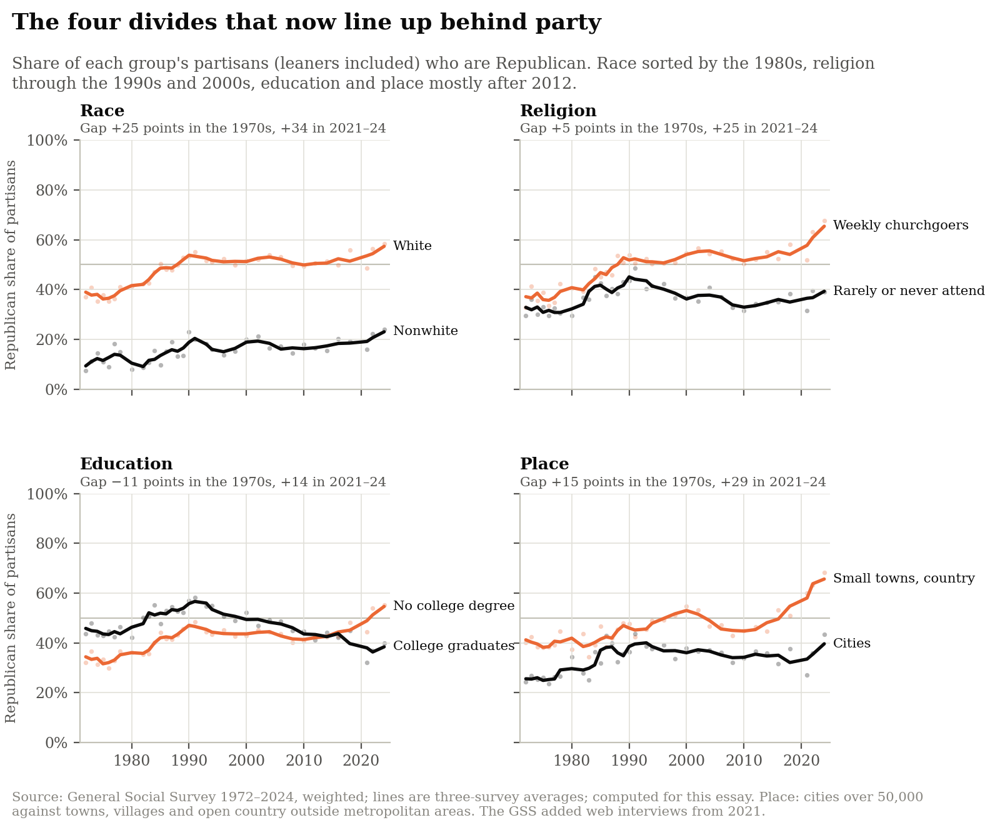
Fig. 13 — Each panel compares the Republican share of two groups' partisans. The race gap opened by the 1980s; religion widened through the 1990s and 2000s; education reversed and the urban–rural gap doubled, mostly after 2012. Source: General Social Survey, weighted; computed for this essay.
Half a century of General Social Survey data reveals how this realignment unfolded in four sequential acts (Figure 13):
- Act I: Race (1964–1980s). A Democratic president's push for the Civil Rights Act of 1964 and the Voting Rights Act of 1965 shattered the New Deal coalition, the story Edward Carmines and James Stimson tell in Issue Evolution. Racially conservative white Southerners who had anchored the Democratic Party since Reconstruction migrated steadily toward the GOP—a defection that, according to Ilyana Kuziemko and Ebonya Washington, accounts for the entire drop in Southern white Democratic identification between 1958 and 1980. The racial gap between white and nonwhite partisans, 25 points in the 1970s, widened to 34 points in the 1980s and has stayed there since.
- Act II: Religion (1980s–2000s). Beginning with Ronald Reagan's 1980 campaign, Republican strategists forged a durable alliance with conservative white evangelicals and the nascent Moral Majority, fusing free-market economics with traditionalist family and religious norms. Issues such as abortion, school prayer, and gay rights—which had previously cut across party lines—became partisan litmus tests, as Geoffrey Layman documents in The Great Divide. In the 1970s, weekly churchgoers were just 5 percentage points more Republican than Americans who rarely or never attended services; today, that religious gap stands at 25 points.
- Act III: Education (2000s–present). In the 1970s, college graduates were a reliable pillar of the Republican coalition: partisans without a four-year degree were 11 percentage points less likely to identify as Republican than college graduates. Over the past two decades—and accelerating sharply after 2012—that relationship inverted. By 2021–24, partisans without a college degree were 14 points more Republican than college graduates (19 points more among white Americans). The bachelor's degree became one of the sharpest cultural and political fault lines in American life.
- Act IV: Place (2010s–present). As the knowledge economy concentrated credentialed professionals in dense metropolitan areas while manufacturing and resource economies hollowed out in the interior, urban and rural America drifted into separate political worlds. The partisan gap between residents of small towns and the countryside and those of cities over 50,000 nearly doubled, from 15 points in the 1970s to 29 points in 2021–24. Americans did not primarily move to find partisan neighbors, and movers' partisan leanings are far too weak to produce today's map; rather, economic history and cultural sorting turned population density itself into a political divide, leaving many Americans with almost no exposure to the other party.
Figure 13 compares the ends of each divide (weekly churchgoers against those who rarely or never attend; small towns against cities), so its gaps are larger than those in Figure 11, which compares each group with everyone else.
By 2024, these four historical currents had combined into a remarkably tight social sorting, captured in the 60,000-respondent Cooperative Election Study.
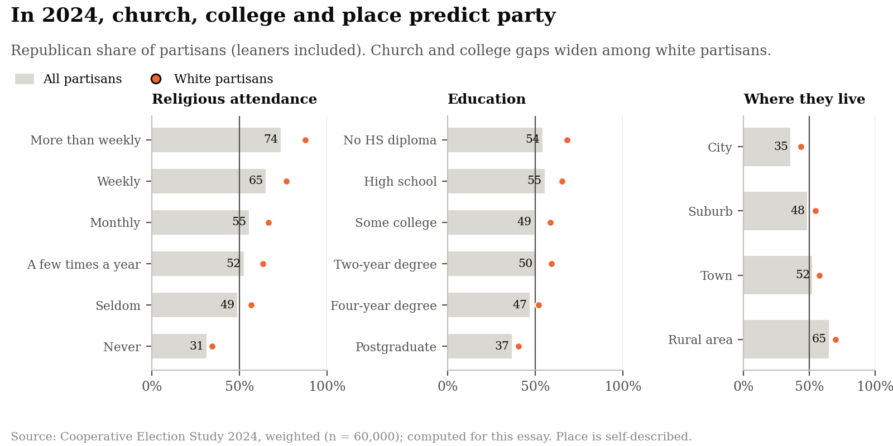
Fig. 14 — 74% of partisans who attend religious services more than weekly are Republican, against 31% of those who never attend; 65% in rural areas against 35% in cities; 55% of high-school graduates against 37% of those with a postgraduate degree. Source: CES 2024 (n = 60,000); computed for this essay.
Among all partisans in 2024, the Republican share falls step by step as religious attendance declines (from 74% among those attending more than weekly to 31% among those who never attend) and as places grow denser (from 65% in rural areas to 35% in cities), and it falls broadly with education (from 55% among high-school graduates to 37% among postgraduates). The religious and educational gradients are steeper still among white partisans (Figure 14). Pew's study of validated voters in the 2024 presidential election confirms the pattern at the ballot box: Donald Trump carried non-college voters 56% to 42% and rural voters 69% to 29%, while Kamala Harris carried college graduates 57% to 41% and urban voters 65% to 33%.
In Congress and on the issues
Inside Capitol Hill, this demographic sorting destroyed the cross-cutting faction that had once brokered legislative compromise: the Southern Democrats.
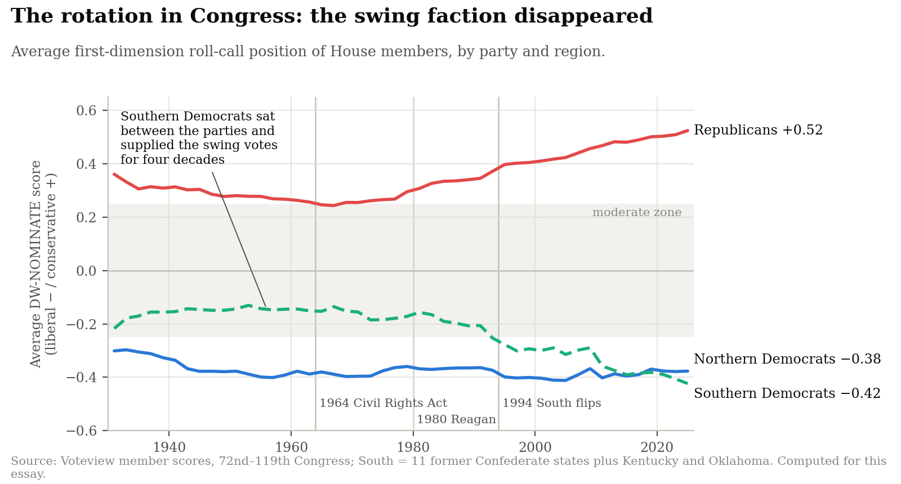
Fig. 15 — Southern Democrats moved left after the civil rights laws, fast after 1994, and are now indistinguishable from Northern Democrats. Source: Voteview; computed for this essay.
For four decades after the New Deal, Southern Democrats occupied the ideological middle ground between conservative Republicans and liberal Northern Democrats, supplying the pivotal votes for bipartisan coalitions (Figure 15). As the Voting Rights Act enfranchised Black Southerners and conservative white voters switched to the GOP—culminating in the 1994 Republican takeover of Congress—the conservative Southern Democrat all but vanished, replaced either by conservative Republicans or by progressive Democrats representing majority-minority and urban districts. Today, Southern House Democrats (−0.42) sit slightly to the left of Northern Democrats (−0.38), facing a Republican conference at +0.52 across an empty center.
As the parties' demographic coalitions rotated, public policy attitudes rotated with them. Because the General Social Survey has asked the same questions for five decades, we can watch it happen, question by question (Figure 16).
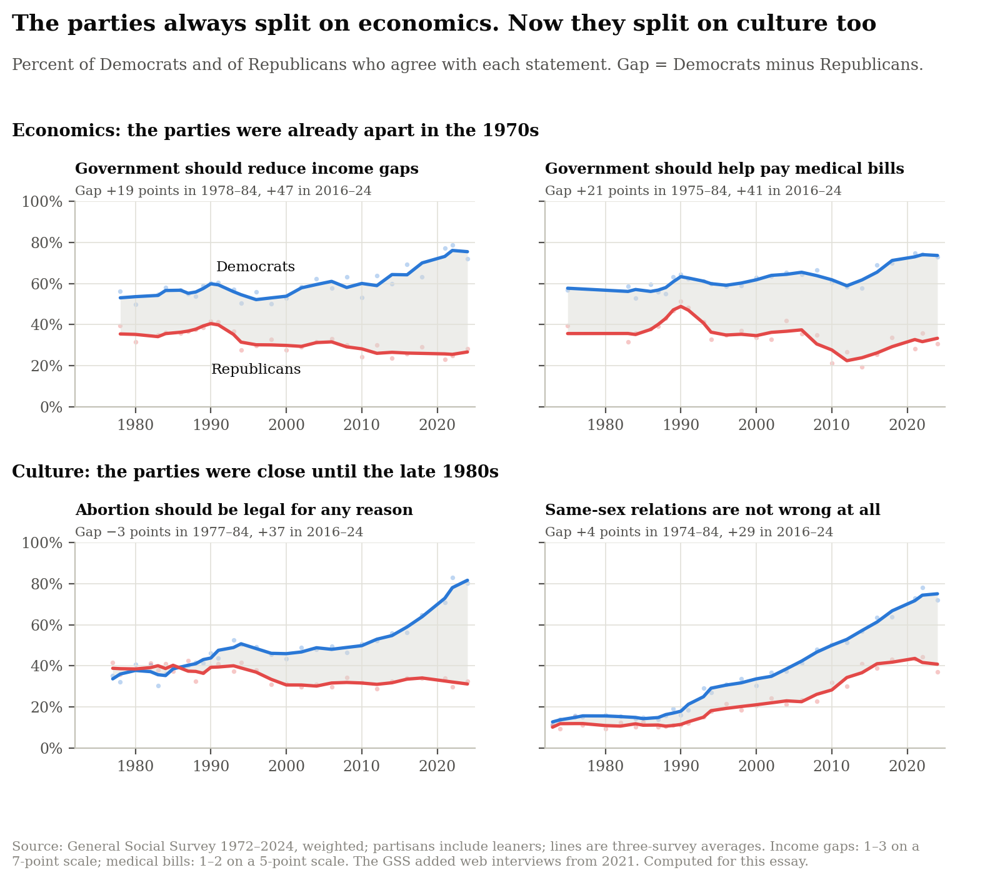
Fig. 16 — On economics, Democrats and Republicans were already about 20 points apart in the late 1970s; the gaps are now 41 to 47 points. On abortion and same-sex relations, the parties were within a few points of each other until the late 1980s; the gaps are now 37 and 29 points. Source: General Social Survey, weighted; computed for this essay.
In the late 1970s and early 1980s, the divide between Democrats and Republicans was overwhelmingly economic. Democrats were about 20 points more likely than Republicans to say the government should reduce income gaps or help people pay medical bills. On abortion, the parties were indistinguishable: Republicans were, if anything, slightly more likely to say it should be legal for any reason. By 2016–24, the economic gaps had roughly doubled, to 47 and 41 points, and cultural gaps had opened where there were almost none: 37 points on abortion and 29 on same-sex relations. Much of the widening since the 2000s came from Democrats moving left on both kinds of question. Averaging four economic and four cultural questions, the parties' cultural gap grew from a fifth of their economic gap in 1974–84 to three-fifths in 2016–24. The public's two axes have begun to fuse as well: in the 1970s a person's economic views said almost nothing about their cultural views (a correlation of 0.04), and by 2016–24 the two go together (0.28). Party competition is no longer mainly an argument over how much the government should tax and spend; it has become a conflict over moral order and group identity as well.
Why stacked divides breed enemies
Generations of political sociologists have stressed that cross-cutting cleavages are the shock absorbers of pluralist democracy. When citizens clash over marginal tax rates or labor law but share a church pew, a neighborhood, or a class background, their political rivals remain recognizable human beings with whom they must cooperate in everyday life.
When social cleavages stack on top of one another, those shock absorbers vanish. When your political opponent differs from you not only on tax policy, but also in race, religious observance, educational credentials, and whether they live in a dense urban core or a rural township, every election feels like a referendum on whose way of life will prevail. As political scientist Lilliana Mason has shown in her research and in her book Uncivil Agreement, the alignment of partisan, racial, religious, and cultural identities generates intense emotional hostility and moral outrage even when citizens' underlying policy views remain moderate. Splits over marginal tax rates can be compromised at the bargaining table; clashes over moral status and group belonging cannot.
Figures 13 and 14 show each divide on its own. The mechanism this essay proposes needs more: that the divides now line up together, so that a partisan's race, faith, schooling, and home all point toward the same party. That is what "stacking" means here: convergence in the traits' associations with party, not that the traits themselves occur together more often. The General Social Survey can test this directly. Score each partisan by how many of four Republican-leaning traits they have—white, attends religious services weekly, no four-year degree, lives in a small town or the countryside—and see how sharply party follows the count (Figure 17).
![The four divides now point toward the same party. Left: line chart of the Republican share of partisans by the number of four Republican-leaning traits they have, for the 1970s, 1990s, 2010s and 2021–24; the 1970s line is nearly flat, from 28% with one trait to 42% with four, while the 2021–24 line climbs from 14% with none to 87% with four. Right: the odds multiplier for each extra trait rises from 1.26 in the 1970s to 2.63 in 2021–24, with 95% intervals, clustered by survey sampling unit, that do not overlap.](polarization-stacking.png)
Fig. 17 — In the 1970s, partisans with all four Republican-leaning traits were only modestly more Republican than those with one (42% against 28%). In 2021–24 the share runs from 14% with none to 87% with all four. Source: General Social Survey, weighted; computed for this essay.
In the 1970s the four traits pulled in different directions—lacking a degree then went with being less Republican—so a partisan with all four was only 14 points more likely to be Republican than one with just one. In 2021–24 the difference is 59 points. In a model that also controls for age, sex, and living in the South, each additional trait multiplied the odds of being Republican by 1.26 in the 1970s (95% interval 1.18 to 1.34, allowing for the survey's clustered design) and by 2.63 in 2021–24 (2.39 to 2.90). Even if each trait is coded in whichever direction it pointed in the 1970s, the 1970s figure is only 1.52. The four traits' joint fit to party identification, measured by McFadden's pseudo-R², more than tripled (see the Methods and Data appendix). Race has mattered about equally since the 1980s; what changed is that religion, education, and place now push in the same direction as race. Three limits apply. The traits still predict party only modestly; demography is far from destiny. The traits do not co-occur more often than they used to—what changed is their alignment with party. And the General Social Survey does not measure partisan hostility, so the link from stacked identities to animosity rests on Mason's studies rather than on these data.
Is party reshaping the people?
A skeptic could read all of this backward. Party loyalty can change the traits themselves. Partisans adjust their churchgoing to fit their politics, as Michele Margolis and Stratos Patrikios show; the rise of Americans with no religion was partly a reaction against the religious right, as Michael Hout and Claude Fischer found; and Patrick Egan shows that partisans shift even identities such as ethnicity and sexual orientation to match their politics. If party shapes the traits, part of what looks like stacking is party loyalty measuring itself. Two checks address this.
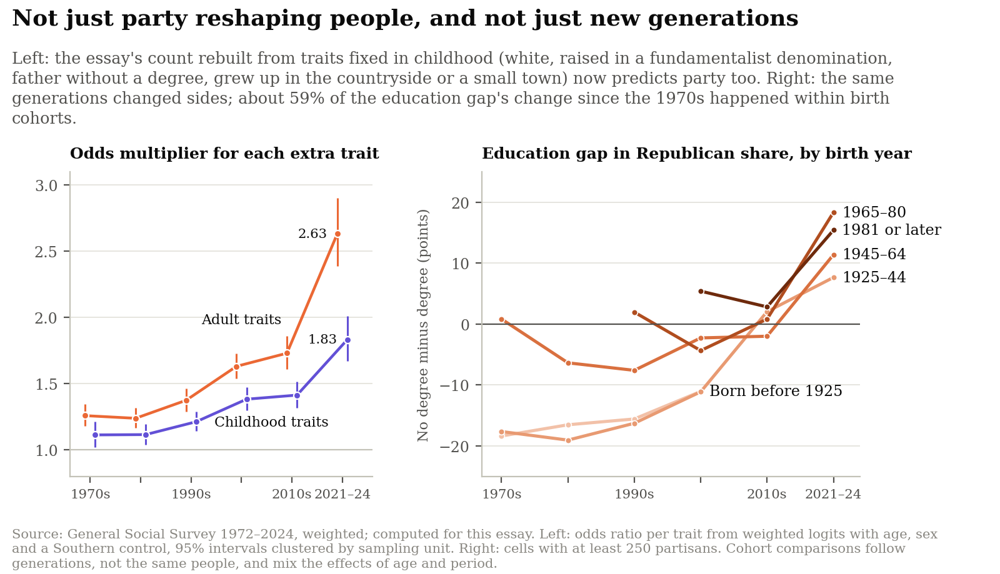
Fig. 18 — Left: traits fixed in childhood now predict party too. Right: the same generations changed sides on education. Source: General Social Survey, weighted; computed for this essay.
The first check uses only traits fixed in childhood: being white, being raised in a fundamentalist denomination, having a father without a four-year degree, and growing up in the countryside or a small town. Adult partisanship cannot have changed any of them. Rebuilt from these traits, the count stacks too. Each extra childhood trait multiplied the odds of being Republican by 1.11 in the 1970s (95% interval 1.02 to 1.21) and by 1.83 in 2021–24 (1.67 to 2.01). Having a father without a degree went from 18 points less Republican to 12 points more (Figure 11). So at least part of the alignment runs from social position to party. The childhood count stacks less steeply than the adult count (1.83 against 2.63), which leaves room for influence in both directions (Figure 18, left).
The second check asks who changed. The realignment could have come from new generations arriving with new loyalties (replacement), or from the same generations changing sides (conversion). Take Americans born between 1925 and 1957, who were adults in the 1970s and are still sampled in 2010–24. Among them, partisans without a degree went from 10 points less Republican than graduates to 3 points more. When each five-year birth cohort is allowed its own gap, about three-fifths (59%) of the change in the education gap since the 1970s happened within cohorts, and nearly all of the change in the religious gaps (85% to 87%) and the class gap (98%). The realignment ran mostly through generations that changed sides (Figure 18, right). These are generations, not the same individuals, and changes within a generation mix the effects of aging with those of the times. For religion, conversion could still mean that people changed their churchgoing to fit their party.
The voters left in between
Yet compressing both economic and cultural conflict onto a single party line produced a major structural side effect: it left millions of Americans cross-pressured, holding views that neither party's coalition combines.
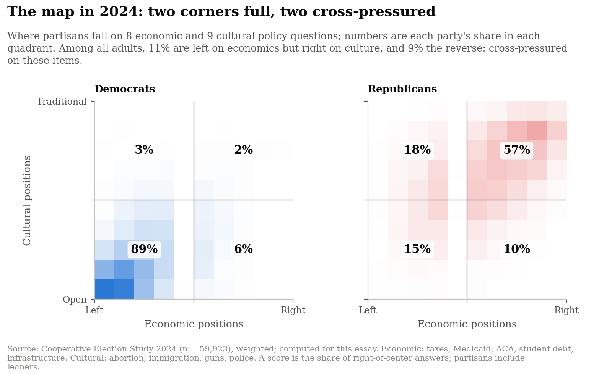
Fig. 19 — 89% of Democrats are left of center on both axes. Republicans are more mixed: 57% are right on both, and 18% are left on economics but right on culture. Source: CES 2024 (n = 59,923); computed for this essay.
Plotting the nearly 60,000 respondents of the 2024 CES across eight economic and nine cultural policy questions shows how many are cross-pressured (Figure 19). Fully 89% of Democrats cluster in the lower-left quadrant—economically left of center and culturally open. On the Republican side, 57% occupy the orthodox conservative upper-right quadrant—economically right of center and culturally traditional. That leaves two off-diagonal quadrants whose combinations neither party's majority shares: the 9% of all adults in the lower-right quadrant (fiscally conservative, culturally liberal) and, still larger, the 11% of all adults—including 18% of rank-and-file Republicans—in the upper-left quadrant who favor left-of-center economic policies alongside traditional cultural norms. These shares depend on which questions are asked and where the line is drawn: across reasonable alternatives, between 8% and 15% of adults land in the upper-left corner. They describe views on these items; whether these voters feel unrepresented is a separate question the survey does not answer.
For decades, neither party leadership spoke for this upper-left populist bloc: national Democrats moved steadily toward cosmopolitan cultural liberalism, while establishment Republicans championed deregulation, free trade, and entitlement restraint. These cross-pressured voters became a decisive prize of twenty-first-century populist politics. In Lee Drutman's survey of the 2016 electorate, the voters who switched from Barack Obama in 2012 to Donald Trump in 2016 came overwhelmingly from this corner, though the exact shares depend on the questions used, as the Niskanen Center notes.
4. The core dispute: openness and tradition
The four divides could be a coincidence of history: civil rights first, then the religious right, then the knowledge economy, each with a separate cause. This essay reads them as one story, and argues that it is the core dispute of American polarization. Each divide marks how an American stands toward the changes remaking the country, and over fifty years the parties have sorted Americans by that stance. The same stance runs through the issues that divide the parties today, and through the pandemic, the sharpest test of it in living memory.
Four ways the country changed
Consider what each divide measures, and how the country moved on each over the half-century of the General Social Survey:
- Race. Nonwhite Americans rose from about one adult in nine in the 1970s (12%) to more than one in four in 2021–24 (27%). In many places, the country of a white American's childhood is not the country of their grandchildren. When Maureen Craig and Jennifer Richeson simply reminded white Americans that racial minorities are projected to become a majority, they endorsed conservative policies more strongly, and in one experiment unaffiliated whites leaned more toward the Republican Party; the effect ran through a sense of threat to their group's status.
- Religion. Weekly churchgoers fell from 30% of adults to 18%, and Americans with no religion rose from 7% to 28%.
- Education. Adults with a four-year degree rose from 13% to 31%, and the degree became the entry ticket to the best-paid work in a knowledge economy.
- Place. Prosperity gathered in the large metropolitan regions. By the count of Mark Muro and colleagues at Brookings, the 509 counties Joe Biden carried in 2020 produced 71% of the nation's economic output; the 2,547 counties Donald Trump carried produced 29%.
Each Republican-leaning trait—white, devout, without a degree, from a small town—describes an America that is shrinking as a share of the whole, and each Democratic-leaning trait describes one that is growing. The divide that faded fits the same reading. Class organized politics while the argument was over how to share the gains of a stable industrial economy; it stopped predicting party once the argument turned to whether the economy and the culture should keep changing at all.
Four fault lines
If the four traits mark a stance toward change, the parties should also have parted on change itself. Four questions that the General Social Survey has asked over long periods allow a direct look (Figure 20).
![Openness, globalization, change, expertise: where the parties parted. Four small line charts of the share of Democrats and of Republicans agreeing with a statement. The number of immigrants should be reduced: Republicans 61% in 2004–08 and 64% in 2021–24, Democrats falling from 48% to 20%. America should limit imports to protect its economy: Democrats 73% and Republicans 66% in 1996, Democrats 36% and Republicans 68% in 2021–24. Science makes our way of life change too fast: Democrats 48% and Republicans 44% in 2006–10, Democrats 38% and Republicans 49% in 2021–22. A great deal of confidence in the scientific community: Republicans 49% and Democrats 43% in 1973–84, Republicans falling to 27% and Democrats rising to 57% in 2021–24.](polarization-openness-change-expertise.png)
Fig. 20 — On immigration, trade and the pace of change, the gaps opened mainly because Democrats moved; on confidence in science, Republicans moved, from the more confident party in the 1970s to by far the less confident. Source: General Social Survey, weighted; computed for this essay.
- Openness. In 2004–08, 48% of Democrats and 61% of Republicans wanted fewer immigrants admitted to the country. By 2021–24, 20% of Democrats did, against 64% of Republicans. Over a longer span, on the same question in the survey's international module, the parties were 7 points apart in 1996 (60% and 67%) and 48 points apart in 2024 (26% and 74%). In 1996, 33% of Democrats and 39% of Republicans agreed that immigrants are generally good for America's economy; in 2024, 74% of Democrats agreed, and still 37% of Republicans.
- Globalization. In 1996, Democrats were the more protectionist party: 73% agreed that "America should limit the import of foreign products in order to protect its national economy," against 66% of Republicans. By 2021–24, 36% of Democrats agreed and 68% of Republicans. The loss of manufacturing jobs to trade and automation is change in its most concrete form, and Section 6 shows that how communities received it depended on who they already were.
- Change. Since 2006 the survey has asked whether "science makes our way of life change too fast." In 2006–10, Democrats agreed slightly more often than Republicans (48% against 44%). By 2021–22 the order had reversed: 49% of Republicans agreed, against 38% of Democrats. This gap is the smallest of the four and depends on how the question was put—20 points among people questioned by an interviewer, 7 among those who answered online—but it points the same way.
- Expertise. In 1973–84, Republicans were the more trusting party: 49% had a great deal of confidence in the people running the scientific community, against 43% of Democrats. Using the same survey, the sociologist Gordon Gauchat found that conservatives began the years 1974–2010 with the highest trust in science of any ideological group and ended them with the lowest, a decline unlike that of trust in other institutions. The slide then steepened. By 2021–24, 27% of Republicans had a great deal of confidence in the scientific community, against 57% of Democrats.
Who moved matters as much as the gaps. On immigration, trade and the pace of change, Republican voters stand roughly where they stood two decades or more ago—on immigration and trade, where most Americans of both parties stood in 1996—and the gaps opened because Democrats moved. The same holds for abortion: Republicans' support for legal abortion for any reason slipped from 39% to 33% while Democrats' nearly doubled, from 36% to 70% (Figure 16). On science, Republicans did move—away from the institution that announces most of what is new. The country, and one of its coalitions, moved on; the other held its ground, or turned on the messengers.
Traditionalism is selective, not total. Since 1974–84, Republicans' acceptance of same-sex relations has nearly quadrupled, from 11% to 41%, and in both parties the share ranking obedience among the two most important things a child should learn fell by about half or more. The resistance is strongest where change touches who belongs to the country, what it trades and makes, how fast the familiar world disappears, and who has the authority to say what is true.
The pandemic: change at full speed
In 2020 the pandemic compressed years of change into months. Daily life was reorganized by public-health orders, work moved online, and a new kind of vaccine arrived within a year, and every American was asked, at once, to defer to experts about how to live. It sorted the country along the line this essay describes. Between 2018 and 2021, the partisan gap in confidence in the scientific community nearly tripled, from 11 points to 30. In 2022, 70% of Democrats strongly agreed that vaccines are important for children, against 38% of Republicans. The divide was not only a matter of opinion. In Florida and Ohio, Jacob Wallace, Paul Goldsmith-Pinkham and Jason Schwartz found no difference in excess deaths between registered Republicans and Democrats before vaccines were widely available; after May 2021, when every adult could get one, the excess death rate among Republicans was 43% higher. The refusal of the experts' advice appears to have cost lives. This is the period I described in The Great Temper Tantrum, when a society met real problems with imaginary solutions and has not felt whole since.
One stance behind many divides
If openness to change is the root, attitudes toward change should account for much of what the social divides predict about a partisan's party. The General Social Survey allows a direct check for 2021–24, comparing models of party identification with and without them.
- Two questions predict party better than four identities. Whether a partisan wants fewer immigrants and how much confidence they have in the scientific community explain more of the difference between Democrats and Republicans than being white, a weekly churchgoer, without a degree and from a small town combined (23% of the variation against 14%).
- They account for about half or more of the education and place gaps. Holding those two attitudes fixed shrinks the gap between partisans without a degree and graduates by 55% (95% interval 44% to 75%) and the gap between small towns and cities by 47%. Adding views on immigration and trade instead gives 60% for education.
- With the cultural questions, they account for most of the religious gap too. Adding views on abortion and same-sex relations, asked of a smaller subsample, accounts for most of the churchgoing gap and two-thirds of the education gap.
- Race is the exception. These attitudes account for only 12% to 22% of the racial gap. Black Americans in particular are often religious and culturally traditional, yet remain overwhelmingly Democratic, a loyalty rooted in the civil rights realignment. Race is the one divide whose history is not mainly a story about openness to change.
These are descriptive decompositions, not causal estimates. Party loyalty also shapes attitudes—partisans take cues on immigration and science from their leaders—so the shares are an upper bound on what the attitudes could explain. But they show that a single stance, measured by two or three questions, carries much of the weight that race, religion, education, and place appear to carry on their own.
When change outruns adaptation
Change by itself does not polarize a country. Americans absorbed the automobile, electrification and television without splitting into warring camps. What divides a society is change faster than part of it can adapt to—what Alvin Toffler called future shock in 1970: the disorientation of people subjected to too much change in too short a time. The speed matters as well as the direction. When Denmark assigned refugees to municipalities by a quasi-random rule, Christian Dustmann, Kristine Vasiljeva and Anna Piil Damm found that larger allocations raised the vote for anti-immigration parties in all but the most urban municipalities, where they had, if anything, the opposite effect. The same change pushed different places in opposite directions, according to how ready they were to absorb it.
The last half-century delivered change on every front at once—demographic, religious, economic, technological—and it did not arrive evenly. Its gains came first and most comfortably to the big metropolitan regions, the college-educated and the young; its costs fell hardest on small towns, the less educated and the old. Those who could adapt prospered and came to see openness as a virtue. Those who could not, or would not, came to see it as a threat. Amplifiers then organized each side into a party (Sections 5 and 7), and radical wings formed at the edges of both (Section 10).
"Leave us alone"
Researchers who have listened to the Americans behind these numbers describe a common feeling. In rural Wisconsin, Katherine Cramer found a "rural consciousness": a conviction that decisions are made in the cities, that rural places do not get their fair share of resources, and that city people do not respect rural ways of life. In Louisiana, Arlie Hochschild heard a "deep story" of people waiting patiently in line for the American Dream while others cut ahead with the government's help, until they felt like strangers in their own land. Pippa Norris and Ronald Inglehart describe the same reaction across Western democracies as a cultural backlash: older, less educated, religious and rural citizens, once the cultural majority, turning against a long shift toward socially liberal values that left them feeling like strangers in their own countries.
Strip away the platforms, and the message much of the Republican coalition sends to the forces remaking the country is a refusal. It runs something like this: Keep your experts and your economists, your public-health guidance and your climate models. Keep your assurance that diversity is our strength, that pluralism is a virtue, and that immigration pays for itself. Keep the degree you say I need and the city you say I should move to. I will live as my parents lived, in the town where they lived, and worship as they worshiped, and Washington can leave me alone. At its most defiant, it says: I would rather live poorer than live differently. Not every Republican voter thinks this way, and many would reject the description; it is the posture the coalition's leaders voice and its primaries reward.
It is an understandable wish. The costs of the last half-century's changes fell hardest on the people who now resist them: on the factory towns hit by Chinese imports (Section 6), and on middle-aged white Americans without a college degree, whose deaths from drugs, alcohol and suicide rose fast enough, Anne Case and Angus Deaton found, to reverse decades of falling mortality. Being told by credentialed strangers that all of this was progress did not help.
But it is a wish, not a plan. No election can make the country less diverse, reverse secularization, restore the economy of 1970, or return to the pulpit the authority that has passed to the laboratory. A politics of refusal can slow change at the margins—at a border, in a school curriculum, in a research budget—but not the forces behind it. It keeps promising what it cannot deliver, and the distance between promise and result keeps its supporters aggrieved, and the aggrieved loyal. The places that refuse change do not get the old world back; they get the new one later, and on worse terms. The MAGA movement goes further. It does not merely refuse change; it promises to undo it, by radical means (Section 10).
The same divide abroad
If change is the root, the same divide should appear wherever the same changes arrived, and it does. Across 21 Western democracies, Amory Gethin, Clara Martínez-Toledano, and Thomas Piketty find that university-educated voters moved left and less-educated voters moved toward the nationalist right over the same decades, and political scientists describe the new European divide as one between integration and demarcation (Appendix D). Britain's vote to leave the European Union drew on older, less educated voters worried about immigration and multiculturalism, as Sara Hobolt found, and the populist radical right that rose across Europe draws on the same voters, the core of what Pippa Norris and Ronald Inglehart call the cultural backlash.
What varies is the form. In proportional systems the refusal gets a party of its own, and that party draws the hostility: across 103 elections in 28 European countries, Eelco Harteveld, Philipp Mendoza and Matthijs Rooduijn find that supporters of populist radical-right parties are uniquely negative about the supporters of mainstream parties, and the mainstream's supporters about them. In America's two-party system, the reaction took over one of the two parties, so the hostility engulfed the whole electorate (Section 7). This is why the twelve-country comparison in Figure 8 should not be read as showing that the change divide spared half of the rich democracies. Hostility there is averaged across many parties, which can hide intense dislike of one, and every country's series ends by 2020, four of them by 2015, before or early in the backlash that followed the 2015 refugee crisis and the Brexit vote.
Faster change ahead
The pace of change is not slowing. Artificial intelligence is likely to compress into years shifts in work and knowledge that once took decades. Writing in Science, Tyna Eloundou and colleagues estimate that about 2% of American jobs could have more than half of their tasks affected by large language models used through simple chat interfaces, and that once software built on those models matures, the share rises to just over 46%. If this essay's reading is right, faster change means a deeper divide, unless the country gets much better at helping people adapt (Section 11).
There is a twist. The same study finds that higher-wage occupations are, in general, more exposed than lower-wage ones. The next wave of change may land hardest on the credentialed professionals who welcomed the last one, the core of today's Democratic coalition. Whether they adapt, or discover a refusal of their own, may decide where the line between the parties runs next.
Where the evidence is thin
This essay makes a strong claim, and the evidence for it is uneven.
- It is observational. No experiment can assign openness to change. The case rests on the pattern of who moved, when, and which attitudes carry the weight of the social divides.
- The surveys do not measure personality. The psychology cited in Section 3 links openness and conservatism in individuals; the General Social Survey shows only that the parties have parted on questions about immigration, trade, change and science.
- Influence runs both ways. Party leaders can teach their voters to distrust scientists or immigrants as easily as voters can choose leaders who share their distrust. The science gap widened most when the parties fought over the pandemic, which fits elite cues as well as worldview, and the companion paper's elites-first reading (Section 10) fits many of these facts too.
- Race is only partly explained. Attitudes toward change account for little of the racial divide.
- The wings are described, not measured. The account of a reactionary right and a progressive vanguard in Section 10 rests on their programs and on surveys of activists, not on an estimate of how much each contributes to the hostility.
- Not every measure of change tracks hostility abroad. Across the twelve democracies, growth in the nonwhite share of the population goes with rising hostility (r = +0.59), but growth in the foreign-born share does not (r = 0.00), and faster internet adoption goes with less (r = −0.48); all three intervals include zero (Figure 21). The divide follows cultural and demographic change more closely than technological change.
5. Elites diverged, and the right moved further
If the dispute over change is the core, party elites are among its chief amplifiers: they decided which side of it each party would take, and how loudly. Ordinary citizens did not sort themselves in a vacuum. The congressional record shows the parties' elites diverging from the late 1970s. Whether elites led or followed the public is harder to establish, because comparable surveys of partisan feeling begin only in 1978.
In congressional roll-call voting between 1971 and 2025, the average House Republican shifted from +0.25 on Voteview's first-dimension ideological scale to +0.52—a rightward move of 0.27 units. Over the same half-century, the average House Democrat shifted from −0.31 to −0.39—a leftward move of 0.08 units. On the floor of the House, the Republican conference moved more than three times as far from the center as the Democratic caucus. As Matt Grossmann and David Hopkins have documented in Asymmetric Politics, this asymmetry reflects a deep structural difference between the two coalitions: the modern Republican Party is organized as an ideological movement that prizes doctrinal purity, whereas the Democratic Party operates as a loose federation of social and constituency interest groups seeking concrete policy deliverables.
Part of the Republican movement came through turnover rather than conversion: since 1981, when a House seat passed from one Republican to another, the newcomer has usually voted further right than the member replaced (Section 8).
That legislative asymmetry raises a central puzzle: if congressional Republicans moved so much further from the center than congressional Democrats, why is emotional hostility in the public roughly symmetrical? Democrats and Republicans dislike and dehumanize each other about equally.
Part of the explanation lies in how citizens form political judgments. Most voters do not derive policy positions from abstract ideological axioms; they take cues from the leaders of their political tribe. Clearer elite positions revived mass partisanship; voters tend to adopt their leaders' views rather than choose leaders by their views; and many self-described conservatives follow Trump to liberal positions when told he holds them. When party elites polarize, partisans lean even harder on party endorsements and discount substantive information. One plausible sequence follows. As Republican lawmakers moved sharply right on taxes, regulation, and immigration, Democratic voters saw an escalating threat to the social safety net and civil rights. As Democratic elites embraced rapid cultural change on race, gender, and secularism, conservative voters perceived an existential assault on traditional institutions. Each camp reacted to the other side's most visible moves, convincing both bases that their opponents had lost their minds.
Comparative evidence across advanced democracies is consistent with that account, though with ten to twelve countries it can only suggest it.
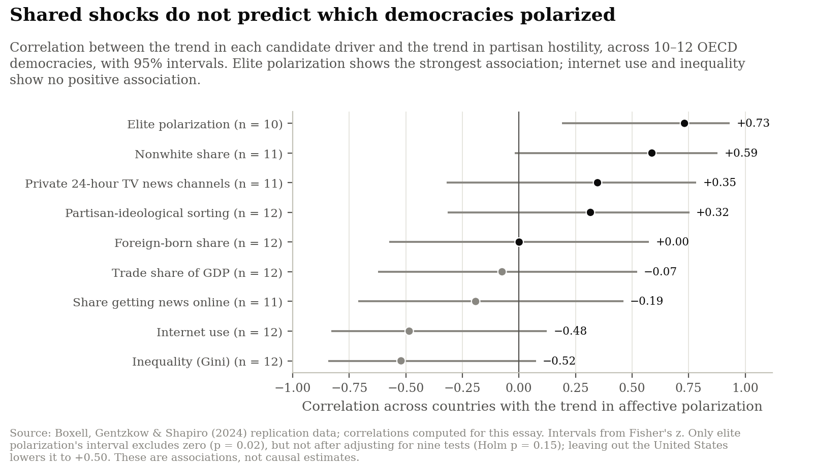
Fig. 21 — Correlation between the trend in each candidate driver and the trend in partisan hostility, across 10 to 12 democracies, with 95% intervals. Elite polarization shows the strongest association, but its interval is wide and it is not significant once nine tests are taken into account. Source: Boxell, Gentzkow & Shapiro (2024) replication data; computed for this essay.
When we compare trends across the twelve OECD democracies in the Boxell, Gentzkow, and Shapiro dataset (Figure 21), polarization among party elites shows the strongest association with rising mass hostility: r = +0.73 across the ten countries with data, with a 95% interval from +0.19 to +0.93. It is the only interval that excludes zero, but the evidence is thinner than the point estimate suggests. With nine candidate drivers tested, the result is no longer significant after a standard correction for multiple comparisons (Holm-adjusted p = 0.15); it leans on the United States, without which the correlation falls to +0.50; the elite measure consists of three to five expert ratings per country between 1982 and 2003, and fitting each country's hostility trend to that same window lowers the correlation to +0.65; and a correlation across countries cannot say whether elites moved the public or the public moved its elites. Elite polarization is the strongest observed association, not proof that elites caused mass hostility. Growth in the nonwhite share of the population shows the next largest positive association (r = +0.59), followed by the proliferation of private 24-hour television news channels (r = +0.35) and mass partisan-ideological sorting (r = +0.32). By contrast, growth in the foreign-born population share shows no association (r = 0.00), while trade exposure (r = −0.07), online news consumption (r = −0.19), internet adoption (r = −0.48), and income inequality (r = −0.52) show no positive association; all of their intervals include zero.
Where political leaders fracture along sharp ideological lines or political entrepreneurs enter parliament to politicize cultural grievances, voters follow: when a radical-right party entered the Dutch parliament in 2002, voters polarized immediately and persistently. Across eleven democracies experiencing severe polarization, Jennifer McCoy and Murat Somer identify political entrepreneurs who reorganize politics around an "us versus them" cleavage as the common driver. In the cases these studies examine, leaders divided first and the public followed.
6. Globalization and lost factories: change that landed on some places
Globalization, automation and the loss of manufacturing jobs are change in its most material form. A vast literature points to rising income inequality, deindustrialization, and financial crises as the root causes of contemporary political anger.
The evidence suggests that economic shocks pack real electoral force but act more as triggers than as engines. What mattered was less the size of the loss than how people received the change behind it, and that depended on where they already stood.
Consider aggregate income inequality. In the United States, the pre-tax income share of the top 1% bottomed out at 10.4% in 1978 and roughly doubled over the next four decades, rising roughly as Congress pulled apart in what Nolan McCarty, Keith Poole, and Howard Rosenthal famously called the "dance of ideology and unequal riches". Yet across our twelve-country sample (Figure 21), rising income inequality correlates negatively with changes in partisan hostility (r = −0.52, with an interval that includes zero). Sweden's inequality rose fastest of the twelve while its partisan hostility fell. Aggregate inequality cannot be the sufficient cause of American animus.
The voters' side of the ledger points the same way. If economic grievance were the engine of the realignment, income and class should divide the parties more sharply today than in the 1970s. They divide them less. A partisan's class identity and income now say almost nothing about their party, while their religion, education and hometown say a great deal (Section 3).
Localized trade shocks and acute financial crises show much cleaner causal effects precisely because voters interpret economic pain through the prism of social identity. When David Autor, David Dorn, Gordon Hanson, and Kaveh Majlesi studied the "China shock"—the surge in Chinese import competition after 2000—they found that the hardest-hit districts "disproportionately removed moderate representatives." Crucially, however, the direction of that ideological swing depended on local racial demography: trade-shocked majority-white districts swung toward conservative Republicans, whereas trade-shocked majority-minority districts swung toward liberal Democrats. Similarly, county-level manufacturing layoffs among white workers boosted Donald Trump's vote share in 2016, while layoffs among nonwhite workers reduced it; in Western Europe, import competition from China lifted nationalist parties.
Historical financial crises follow a similar script. Across 20 advanced economies and more than 800 elections since 1870, far-right vote shares rose about 30% in the five years after a systemic financial crisis, though most of the effect faded within a decade. As political scientist Yotam Margalit has argued, acute economic insecurity can tip close elections without explaining much of the vote. Economic shocks supply the spark; a community's stance toward change, carried by its identities, appears to determine which way the explosion blows.
7. Why America's version is so bitter: two parties, winner take all
The divide over change runs through every Western democracy (Section 4). Why did it produce an acute crisis of mutual hostility in the United States while leaving many European peers comparatively civil? The most plausible answer lies in the institutional container of American politics. The container did not create the divide; it is the modulating factor that decided its shape, forcing one dispute into two camps.
Popular reformers frequently blame two procedural bogeymen: partisan gerrymandering and closed primary elections. Yet decades of empirical political science indicate that neither accounts for the macro-trend. The United States Senate, which is never redistricted, polarized almost exactly as much as the House, and simulations with neutral districts reproduce most of the House's polarization. Likewise, historical and cross-state studies find that primary rules have had little direct effect on the ideological extremity of elected lawmakers, and the evidence on top-two primaries is mixed (see Appendix C).
The institutional feature this essay proposes as the best explanation of America's unusual bitterness is its combination of single-member plurality districts and a rigid two-party system. Because that system is old, it cannot explain the timing on its own; the claim is that it interacts with the new divide over change, which the comparative evidence suggests but does not test.
In comparative perspective, majoritarian electoral systems tend to show more affective polarization than proportional, consensus-oriented democracies, although proportional representation is no vaccine: several proportional systems in Southern and Central-Eastern Europe are more hostile than America's. Where multiple parties govern together in coalitions, voters express warmer feelings toward parties that have served as coalition partners with their own. Across Western Europe, higher-educated professionals drifted left and high earners stayed right—the "Brahmin Left" and "Merchant Right" of Amory Gethin, Clara Martínez-Toledano, and Thomas Piketty—while working-class traditionalists drifted toward the nationalist right. Proportional electoral rules allowed new parties to form along the new cultural axis of integration against demarcation—Green parties on the cosmopolitan left and populist radical-right parties on the nationalist right—while traditional center-left and center-right parties continued to bargain over economic management (see Appendix D).
In the United States, Duverger's law and winner-take-all elections locked out third parties, forcing the entire multidimensional realignment into the same two nineteenth-century vessels. Every cleavage—race, religion, education, geography, economics, and culture—was compressed onto a single binary line of combat: the "two-party doom loop" that Lee Drutman describes.
Two modern institutional developments plausibly made that binary compression more toxic:
- The Era of Insecure Majorities. Between 1955 and 1995, Democrats held the House of Representatives for forty consecutive years, by an average margin of about 90 seats between 1955 and 1979. Because majority status was not seriously in doubt from one cycle to the next, minority Republicans had practical incentives to bargain with committee chairs to shape legislation, and majority Democrats could afford defections. Since 1995, House control has flipped five times, with majorities averaging about 30 seats. As political scientist Frances Lee has shown in Insecure Majorities, when control of Congress hangs in the balance every two years, legislative compromise becomes strategically self-defeating: handing the majority party a bipartisan policy victory undermines the minority's campaign case for retaking power.
- The Collapse of Local News. Between 2005 and 2025, nearly 40% of American local newspapers disappeared—falling from 8,891 to 5,419—and newspapers lost 56% of their newsroom jobs between 2008 and 2020. When a community loses its local newspaper, voters lose the beat reporting needed to judge a member of Congress on local service or independent character. Where a paper closed, voters became more likely to vote the same party for president and Senate; where voters got more in-state television coverage, they knew more about their governors and senators and split their tickets more. Without local information, local and congressional elections become referenda on the two national party brands.
![Core dispute, amplifiers, radical wings. Evidence map: dash-dot arrows mark links supported by causal evidence from other studies, dashed arrows links this essay proposes but does not test. At the top, a core dispute between openness to change and tradition, driven by change faster than part of society can adapt to (globalization and trade, immigration and diversity, science and expertise, technology, secularization, the knowledge economy, the pandemic). Below it, amplifiers and modulators—partisan media, social media, elite polarization and the two-party system—organize the dispute into two camps: an open, Democratic camp (college-educated, secular, diverse, metropolitan) and a traditional, Republican camp (white, devout, non-college, small-town). At the edges of the camps stand radical wings, about one American in seven: a progressive vanguard that accelerates change through enforced norms and a reactionary right that pursues restorative ends by radical means such as tariffs, purges and mass deportation; each confirms the other's fears. Together they produce warring camps, mass affective polarization, whose consequences feed back.](polarization-layered-account.png)
Fig. 22 — The layered account this essay proposes, drawn as an evidence map: a core dispute, amplifiers, and radical wings. Boxes summarize documented trends; arrows show which links rest on causal evidence from other studies and which are proposed here. The consequences, Sections 8–10, feed back into the hostility.
Taken together, these forces form a layered account—an interpretation that ties the evidence together rather than a tested causal model (Figure 22). At the core, change faster than part of the country could adapt to divided Americans by their openness to it, and four historical cleavages carried that division into the parties. Amplifiers and modulators organized and sharpened it: polarizing elites, diverging first in the record we have; a winner-take-all two-party container that stacked every divide onto one axis; and nationalized media. Shocks of change triggered local realignments. At the edges of the two camps, radical wings turned the dispute into a war (Section 10). Once assembled, this structure began reshaping the choices placed before voters.
8. Consequence one: the menu
The most damaging byproduct of the Great Rotation may not be that voters dislike one another; it may be that sorting has re-engineered the menu of candidates appearing on the ballot. Citizens can only vote for the candidates offered to them. Two claims need to be kept apart here. The first—that general elections have become far less competitive—is well documented. The second—that this machinery selects more factional nominees—is more inferential, and the evidence for it is partial.
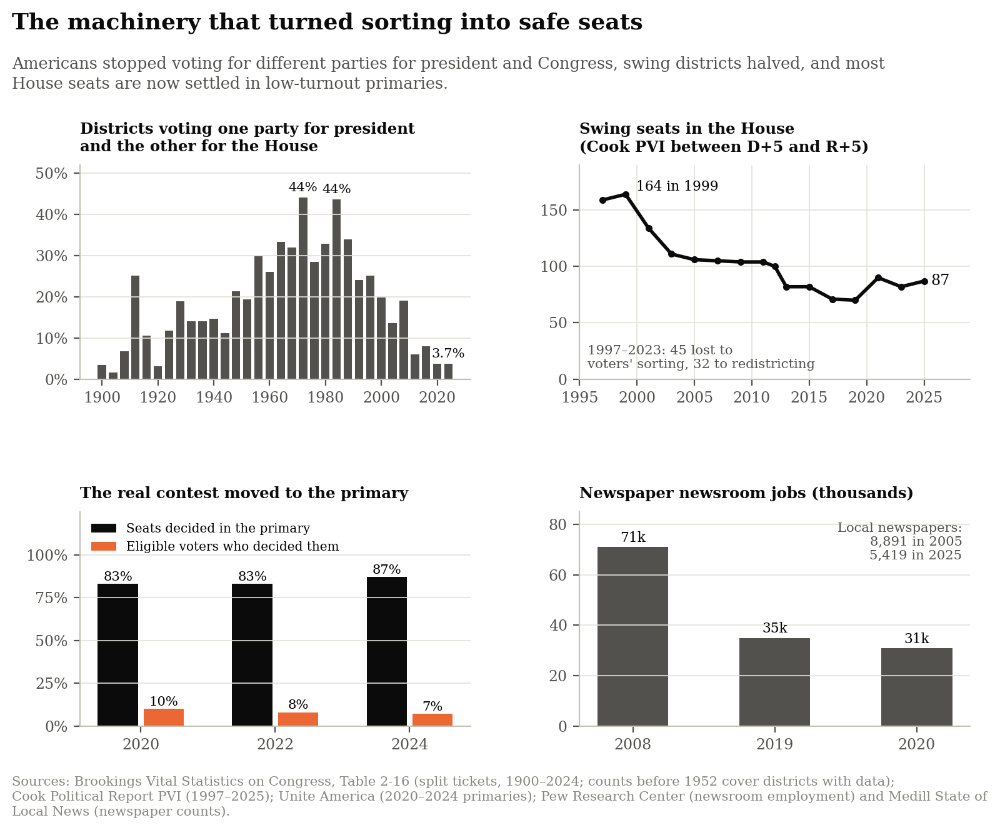
Fig. 23 — Of the 77 swing seats lost between 1997 and 2023, the Cook Political Report attributes 45 to voters sorting themselves and 32 to redistricting. Sources: Brookings Vital Statistics on Congress, Table 2-16; Cook Political Report; Unite America; Pew; Medill.
Three interlocking shifts have hollowed out general-election accountability (Figure 23):
- Ticket-splitting and swing districts have nearly vanished. In 1984, Ronald Reagan carried 49 states in his presidential landslide, yet Democrats kept firm control of the House because 44% of congressional districts voted for one party for president and the other for the House, most of them backing Reagan at the top of the ballot and a Democrat for Congress. By 2020 and 2024, only 16 of 435 House districts (3.7%) split their presidential and congressional outcomes. As straight-ticket voting hardened and geographic sorting deepened, the number of competitive House swing districts (those between D+5 and R+5 on the Cook Partisan Voting Index) fell by nearly half, from 164 in 1999 to 87 in 2025. Over a slightly different window, 1997 to 2023, the Cook Political Report attributes 45 of the 77 swing seats lost to voters sorting themselves and 32 to redistricting.
- Low-turnout primaries have become the de facto election. Because roughly five in six House districts are now safe for one party, the decisive election takes place not in November, but in the dominant party's primary. In 2024, by Unite America's estimate, 87% of U.S. House seats were effectively settled in primaries in which about 7% of eligible Americans voted. Primary voters are not much more extreme on policy than their party's other voters, but they are more engaged and more drawn to insurgents out of disgust with the establishment.
- The November penalty for extremism has withered. For decades, general elections punished ideological excess. Andrew Hall found that between 1980 and 2010, nominating an ideological extremist over a moderate in a competitive House primary cost a party roughly 9 to 13 percentage points of the November vote and cut its chance of winning the seat by 35 to 54 percentage points. That penalty has been shrinking: as Brandice Canes-Wrone and Michael Kistner put it, voters' accountability for candidates' positions "decreases gradually from 1980 through recent elections." Driven by negative partisanship, voters will hold their noses and back almost any nominee wearing their team's jersey rather than let the hated opposition win.
Does the machinery actually select different nominees? Roll-call records allow two descriptive checks. The first compares newcomers with everyone else in their party. Using scores estimated from each Congress's votes alone, first-term House Republicans voted to the right of continuing Republicans in 18 of the 22 Congresses from 1981 to 2023, while first-term Democrats voted closer to the center than continuing Democrats in 19 of the 22, plausibly because many Democratic newcomers win the party's most competitive seats. But that comparison mixes who gets nominated with which districts happen to change hands.
The second check holds the district fixed. It looks only at House seats that passed from one member to a newcomer of the same party at a regular election, within a single redistricting decade, and compares the newcomer's votes in their first Congress with the predecessor's votes in their last. It also allows for how far the party's continuing members moved over the same two years.
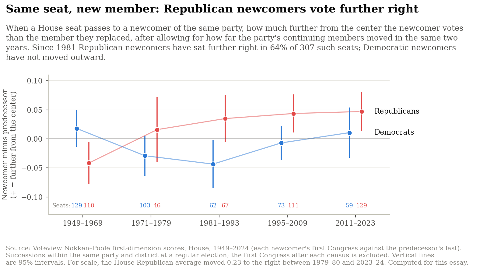
Fig. 24 — Positive values mean the newcomer votes further from the center than the predecessor did, beyond the drift of the party's continuing members. Source: Voteview Nokken–Poole scores; computed for this essay.
Before 1970, Republican newcomers sat slightly closer to the center than the members they replaced. Since 1981, across 307 such seats, they have sat further right on average, by 0.04 on the roll-call scale of Figure 3 (95% interval 0.02 to 0.06), and did so in about two of every three seats (Figure 24). Democratic newcomers show no outward shift (−0.01, interval −0.04 to +0.01, across 194 seats). The difference is small for any one seat, but it adds up. By a rough count, these handovers account for about a quarter of the House Republicans' rightward move between 1979–80 and 2023–24. Sean Theriault found that replacing members accounted for about two-thirds of congressional polarization after 1973, most of it from conservative Republicans taking seats from moderate Southern Democrats. The comparison here isolates a different channel: replacement within the same party and the same seat.
This is the strongest descriptive evidence in the essay for the claim that the machinery selects more factional nominees, and it mirrors the asymmetry in Section 5. It still does not show why the newcomers differ. Primary voters, activists and donors, national party recruitment, or a district electorate that changed between elections could each produce the pattern. Linking each seat to its primary results and to how safe it was would test the mechanism directly; that requires district election returns this essay did not obtain. Roll-call scores also cannot capture the combative style that wins attention.
The cast of characters dominating contemporary national politics illustrates the proposed mechanism, though it does not test it. Donald Trump now serves a second presidential term; Bernie Sanders has defined the ideological pole of the progressive movement for a decade; Alexandria Ocasio-Cortez sits in the top tier of the 2028 Democratic field and led a May 2026 AtlasIntel poll, though most polls still put Kamala Harris ahead.
To note their shared structural origins is not to draw a false moral equivalence among them. Sanders and Ocasio-Cortez have pursued their agendas entirely within constitutional norms and the rules of electoral democracy; Donald Trump sought to overturn the 2020 presidential election and disrupted the peaceful transfer of power—a bright line that separates constitutional politics from regime subversion. Structurally, however, all three fit what a sorted, media-amplified system appears to reward: magnetic factional champions built to mobilize an energized base rather than broker compromises across the center.
9. Consequence two: distrust as a verdict
We can now return to the alarming Gallup finding with which we began: only 51% of Americans still trust the political judgment of their fellow citizens. This section proposes a plausible mechanism for that decline, not a demonstrated cause. It concerns a narrower measure than the interpersonal trust of Section 1: Gallup asks about confidence in the American people's judgment on political issues, not whether most people can be trusted. The 2026 survey interviewed about 1,000 adults by telephone between September 1 and 17, with a margin of error of about ±4 points, so a one- or two-point move in a single year is noise; a decline from the 70s to 51% is not.
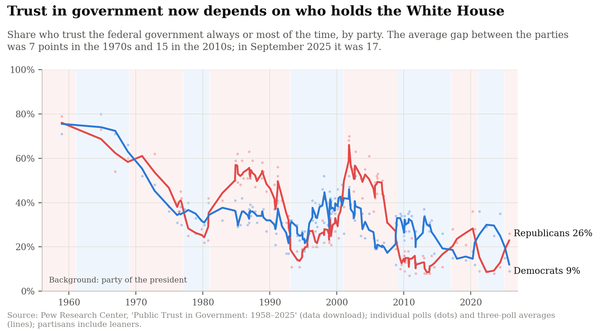
Fig. 25 — Between May 2024 and September 2025, Democrats' trust in the federal government fell from 35% to 9% while Republicans' rose from 11% to 26%. Source: Pew Research Center.
Start with vertical trust in the state. Citizens no longer evaluate the federal government primarily by its administrative competence or policy performance; instead, institutional trust flips like a switch whenever the presidency changes hands (Figure 25). Between May 2024 and September 2025—as the White House passed from Joe Biden to Donald Trump—Democratic trust in the federal government collapsed from 35% to 9%, while Republican trust more than doubled from 11% to 26%. Part of that swing reflects real change—the new administration cut and reorganized the federal workforce in 2025—but the longer Pew series shows the same seesaw at every change of party in the White House, which points to partisan identity as well as performance. In a polarized two-party system, trust in government is hard to raise, because each election lowers it among the losers as it raises it among the winners.
Horizontal trust—confidence in the political judgment of the American people—may follow a similar dynamic, one step removed. This is a hypothesis, not a demonstrated feedback loop.
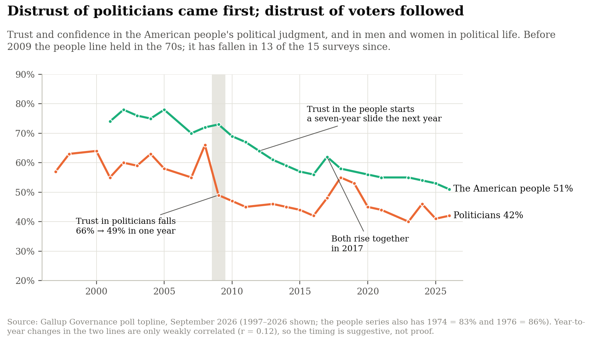
Fig. 26 — Trust in politicians fell from 66% to 49% between 2008 and 2009. Trust in the public's judgment, which had held in the 70s, fell every year from 2010 to 2016 and rose with trust in politicians in 2017. Source: Gallup Governance topline, September 2026.
We never encounter "the American people" in the abstract; we encounter them through the politicians they put in office. Gallup suggested this reading in 2013: eroding faith in the public "may reflect the fact that it is the American people who elected those poorly regarded representatives." The sequence in Figure 26 is telling: public confidence in politicians plunged 17 points in a single year during the 2008–2009 financial crisis (from 66% to 49%). Confidence in the American people's judgment—which had been 70% or higher in every reading from 1974 to 2009—began a seven-year slide the very next year and has fallen in 13 of the 15 surveys since 2009, reaching 51% today. The chart cannot prove the link: year-to-year changes in the two lines are only weakly correlated (r = 0.12), so the evidence lies in the sequence and the turning points. It establishes an order of events, not a cause.
Strikingly, this disillusionment is bipartisan: in 2026, just 53% of Democrats, 51% of Republicans, and 49% of independents express trust in the public's political judgment. Looking out at the same country, each group sees a damning indictment of the electorate:
- Democrats look across the aisle and see tens of millions of fellow citizens twice electing a president who challenged the peaceful transfer of power and attacked constitutional checks and balances.
- Republicans look across the aisle and see tens of millions of voters endorsing progressive cultural orthodoxies and expansive state intervention that they regard as alien to American traditions.
- Independents look at both parties and see an electorate that repeatedly elevates cable-news pugilists and rewards legislative brinkmanship over basic governance.
When voters repeatedly confront constrained choices between antagonistic political coalitions, their declining confidence in the judgment of fellow citizens becomes understandable, even if that judgment rests on an incomplete picture of what those citizens actually believe—a picture Section 10 shows to be badly distorted.
10. The radical wings: how a dispute becomes a war
The core dispute is broad and, for most Americans, moderate. In More in Common's Hidden Tribes survey, two-thirds of Americans belonged to an "exhausted majority" with flexible views, while the most committed activists—progressive activists (8%) and devoted conservatives (6%)—made up about one in seven. But the amplifiers give the wings a reach far beyond their numbers, and the wings turn opposing worldviews into radical programs.
Reactionaries and the vanguard
On the right, the wing that now leads the Republican Party is reactionary, not conservative. Conservatives defend existing institutions and slow change down. Reactionaries, as Mark Lilla describes them in The Shipwrecked Mind, are as radical as revolutionaries: convinced that a golden age was lost, they set out to restore it by force of will. MAGA's program fits that description. Its tariffs had raised the average effective tariff rate to 17.4% by September 2025, the highest since 1935 by the Yale Budget Lab's estimate; it has purged and reorganized the federal civil service; and it has pursued deportation at scale. These are radical means to restorative ends: an attempt to bring back an economy of factories, a country of fewer newcomers, and a government that answers to one camp.
On the left, the progressive vanguard often called "woke" does not merely accept change; it accelerates it. It establishes new norms of language, identity, and conduct and, in universities, newsrooms, and corporate offices, sometimes enforces them through codes, training mandates, and social sanction. Many Americans experience this as change imposed rather than chosen: four in five told More in Common that political correctness had gone too far. The share of Americans who do not feel free to express their views has tripled since the McCarthy era, to more than four in ten in 2020, James Gibson and Joseph Sutherland find; conservatives report more self-censorship than liberals, and self-censorship rises with affective polarization.
The two wings hold different kinds of power. The reactionary right has captured a party and the presidency, and its pull shows in Congress, where Republicans moved much further from the center than Democrats and Republican newcomers keep arriving further right (Sections 5 and 8). The progressive vanguard has moved the Democratic Party less in Congress than in the culture; most of its influence runs through institutions that set norms rather than laws. Each wing feeds the other. Every restoration by force confirms the vanguard's fear of reaction, and every norm enforced by sanction confirms traditionalists' fear that change is being imposed on them. Both mistake defiance for agency, and both leave the exhausted majority choosing between them.
The loop that keeps it going
If polarization were merely the passive residue of historical sorting, it might eventually subside as new issues cross-cut old coalitions. Instead, it persists because extreme politics has locked into a self-sustaining equilibrium: a polarized, fearful electorate is the safest environment in which a factional politician can operate.
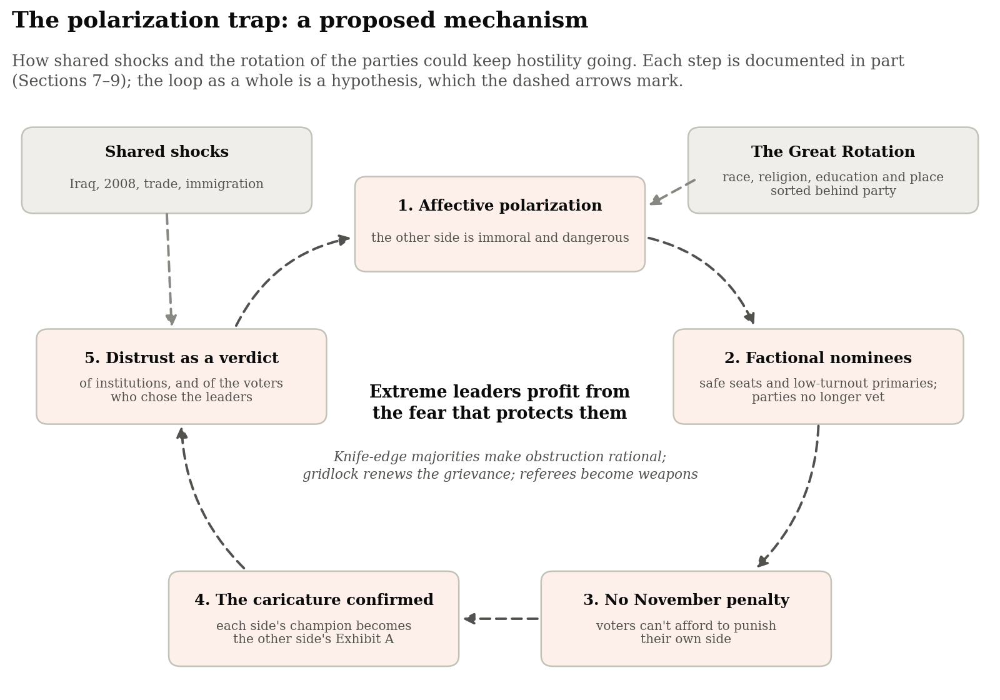
Fig. 27 — A proposed self-sustaining loop. Each step is documented in part; the loop as a whole is a hypothesis.
Three proposed mechanisms could keep this feedback loop spinning (Figure 27):
- Existential fear buys unconditional loyalty. Once a leader convinces supporters that the opposing party represents a mortal threat to democracy, faith, or national survival, accountability within the coalition evaporates. Voters who believe the republic will perish if the other side wins cannot afford to punish their own standard-bearer for corruption, incompetence, or constitutional norm-breaking. As Kenneth Roberts notes, populist movements often arise in societies that are not yet deeply divided and then divide them, and in Hungary, Poland, Turkey, and Venezuela polarizing leaders built entrenched camps on older rifts, binding supporters to the leader through fear of the other side. For politicians whose careers rest on negative partisanship, bipartisan compromise is not a badge of honor—it is disarmament in the face of the enemy.
- Institutional referees are turned into combatants. In an all-or-nothing struggle between stacked identities, no institution is permitted to remain neutral. Courts, election administrators, statistical agencies, universities, and criminal investigators are increasingly judged by whether their decisions help or hurt the tribe. Adverse rulings or inconvenient facts are dismissed as proof that the referees are rigged, while razor-thin congressional majorities make legislative obstruction rational. As gridlock festers and public problems go unsolved, institutional cynicism deepens, making anti-system rhetoric even more appealing.
- Each side's loudest champions confirm the other side's worst caricatures. Partisans do not fight their actual neighbors; they fight a grotesquely distorted mental image of the opposing party.
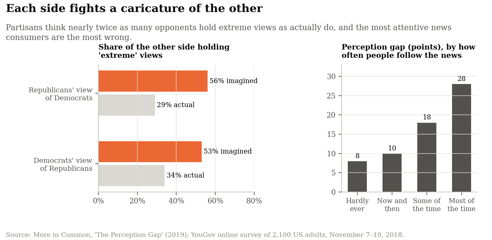
Fig. 28 — Partisans estimate that 55% of the other side holds extreme views; about 30% do. The most attentive news consumers are the most wrong. Source: More in Common, The Perception Gap (2019).
Surveys reveal how badly partisans misread one another. Americans overestimate the share of party-stereotypical groups in the opposing party—such as the share of Democrats who are gay, lesbian, or bisexual or atheist, or the share of Republicans who earn over $250,000 a year—by about 342% on average; they think 38% of Republicans earn more than $250,000, against an actual 2.2%. Similarly, partisans estimate that more than half of the opposing party (56% in Republicans' view of Democrats; 53% in Democrats' view of Republicans) holds extreme policy views, when the true proportion is roughly 30%, according to More in Common (Figure 28). Strikingly, the perception gap is more than three times wider among citizens who follow the news "most of the time" (28 points) than among those who hardly ever follow it (8 points).
Here, on this account, the feedback loop closes. Because safe-seat primaries and outrage-driven media ecosystems elevate theatrical bomb-throwers, the politicians who dominate cable chyrons and social feeds look exactly like the caricatures the other side fears. Each party's base nominates a fighter; the opposing party points to that fighter as Exhibit A of the enemy's depravity; and both electorates conclude that their neighbors across the aisle cannot be trusted.
Crucially, however, ordinary partisan dislike does not automatically translate into an appetite for political violence or authoritarian rule. In a landmark megastudy testing 25 interventions across 32,059 Americans, Jan Voelkel and colleagues found that while 23 treatments reduced partisan animosity, only six reduced support for undemocratic practices and only five reduced support for partisan violence. What does substantially reduce willingness to endorse political violence is correcting false metaperceptions: showing partisans that the overwhelming majority of the opposing party actually rejects violence cut support for partisan violence by 34% in one study. Much of the danger comes less from our policy disagreements than from the phantom monsters our political and media machinery projects onto the wall.
Other readings, and what would tell them apart
The account in this essay is one way to connect the evidence. The companion paper, Alternative Hypotheses and Analyses, describes two others that fit about as well.
- Elites and activists first. Party activists and officeholders, especially on the right, moved first for their own reasons: an ideological movement, insecure majorities, the end of the Southern Democrats. Voters followed their cues, and the social sorting of the 2000s and 2010s was a consequence of party polarization rather than its root. The same-seat comparison in Section 8 fits this reading at least as well as it fits this essay's.
- Media-accelerated sorting. The realignment began with race and religion, as this essay says, but cable news after the mid-1990s and online platforms after 2010 sped it up. Media cannot be the origin of trends that began in the 1970s, but most of the rise in partisan dislike came after 1996, when they could have mattered.
The data assembled here cannot choose among the three. Three kinds of evidence could:
- Panels that follow the same people for years, measuring their identities, issue positions and feelings toward the other party. If stacked identities breed hostility, hostility should rise after a person's identities line up with their party, not before. The American National Election Studies measure identities and hostility in the same respondents; their microdata require registration and were not used here.
- Differences in timing across places. If media accelerated the rise, places that got cable news, broadband or platforms earlier should show faster growth in hostility afterward, compared with similar places that got them later.
- District-level links. If safe seats select factional nominees, the outward shift in Section 8 should be larger where seats are safer and primaries more contested, and distrust should grow more where voters faced such nominees. That requires district election and primary returns.
11. What would help
If openness to change is the root of American polarization, as this essay argues, most of the remedies on offer aim at the branches. That is why well-meaning pleas for "civility" fall flat. A recent meta-analysis of 77 experimental depolarization interventions found that they raise warmth toward the other party by an average of just 5 points on a 101-point scale—and three-quarters of that modest gain evaporates within a single week. Nor should reformers pine for the muddled mid-century party system: in 1950, the American Political Science Association famously complained that the two parties were too ideologically indistinct to offer voters coherent governing accountability—and that mid-century bipartisanship rested in no small part on a tacit agreement to keep Jim Crow off the national agenda.
The biggest lever would be the pace of change itself. If the divide opens when change outruns part of a society's ability to adapt, slower change would narrow it. But most of the change is beyond any government's reach. No country can opt out of new technology, the world economy or the movement of ideas, and one that tried would fall behind those that did not; artificial intelligence will not wait for the counties that are not ready for it. Where policy does set the pace—how many immigrants are admitted each year, how fast an industry or an energy system is asked to transform—matching the pace to what communities can absorb may soften the backlash, as the Danish refugee study in Section 4 suggests. Beyond that, the realistic task is to raise the speed at which people can adapt, and to lower the temperature of the fight while they do.
The goal is not to erase principled disagreement about change, but to keep citizens who disagree about it from treating each other as enemies. Institutional reforms serve that purpose. They can change how the divide is fought—how many parties carry it, who gets nominated, what voters know about the other side—but not whether it exists, and their effects are likely to be modest. The measures worth taking fall into three groups, one for each layer of the account: the first three address the core dispute, the next three the amplifiers, and the last two the radical wings.
- Help people adapt, and share the gains of change. If the deepest divide is over change itself, the most durable remedy is to make change less costly for the people it displaces: wage insurance and retraining for workers whose jobs disappear, investment in the places the new economy has bypassed, and candor from experts about who loses as well as who gains. Education and training that reach adults, not only the young, matter most where change has moved fastest. The next wave, from artificial intelligence, makes all of this more pressing (Section 4). This essay found no study showing that such policies reduce partisan hostility; the case for them here rests on the account in Section 4, though their economic case does not depend on it.
- Pace change where policy sets the pace. Immigration levels, the speed of trade and energy transitions, and the rollout of new rules are choices. Announcing them early, phasing them in, and matching them to what communities can absorb costs little and may blunt the sense that change is being imposed. No study measures the effect on partisan hostility directly.
- Deliver tangible governing competence. Few things defang demagogues faster than a state that visibly solves problems. When governments lower housing costs, maintain safe streets, manage borders humanely and in an orderly way, and deliver reliable public services, they drain the reservoirs of material grievance that factional entrepreneurs exploit.
- Correct false metaperceptions at scale. Because exaggerated beliefs about the other side's extremism and support for violence fuel anti-democratic attitudes, civic organizations, educators, and media outlets should deploy tested informational interventions—correcting misperceptions of who belongs to the other party and of how much it supports violence—that expose partisans to the actual, far more moderate and nonviolent, distribution of views among their opponents. In the largest test so far and elsewhere, their effects have been tracked for weeks, not years, so they would need to be repeated.
- Rebuild local journalism. Restoring local civic information is essential to de-nationalizing elections. Philanthropic endowments, public-interest tax credits, and nonprofit newsroom models that put full-time reporters back on city hall and congressional beats give voters concrete, local criteria to reward independent-minded representatives and punish performative grandstanding; the evidence on newspaper closures and local television coverage suggests that such information changes how people vote.
- Open the two-party container to multiparty competition. Breaking the binary vice requires lowering the barriers that trap every societal cleavage inside two parties. At the state level, reviving fusion voting—allowing minor parties to cross-endorse major-party nominees—lets cross-pressured blocs (such as economically populist, culturally traditional voters or fiscally moderate, socially liberal voters) signal their distinct strength without spoiling elections. At the federal level, replacing single-member winner-take-all House districts with proportional, multimember districts (as proposed in the Fair Representation Act) could allow more coherent parties to compete and form shifting legislative coalitions across different issue dimensions, as peer democracies do, the case Lee Drutman makes in Breaking the Two-Party Doom Loop. Consensus institutions are associated with lower polarization, though that evidence is correlational.
- Ease the low-turnout primary bottleneck. Where single-member districts remain, replacing closed partisan primaries with nonpartisan top-four or top-five primaries paired with ranked-choice voting in the general election—the model adopted in Alaska—is designed to make winners assemble a broad majority in November rather than cater to the 7% of voters who show up in a partisan primary. The evidence is mixed: one study of California's top-two primary finds more moderate legislators, another no gain in representation. Alaska's system survived a repeal vote in 2024 by fewer than a thousand votes and faces another on November 3.
- Hold both wings to the rules of pluralism. Finally, healthy multiparty competition requires absolute clarity about the rules of the game. Commitment to the rule of law, free and fair elections, the peaceful transfer of power, and the constitutional legitimacy of political opposition cannot be treated as just another culture-war bargaining chip. The same clarity applies to the culture. Restoration by purge and progress by enforced conformity both deny opponents their standing as fellow citizens; defending the neutrality of the civil service and the courts, and free inquiry and speech in universities and workplaces, protects the exhausted majority from both.
12. Conclusion: a country divided over change
American democracy did not arrive at this precipice because citizens suddenly lost their capacity for self-government, nor because smartphone algorithms hijacked an otherwise harmonious republic. It arrived here because the country changed faster than part of it could bear. Over five decades, the foundational fault lines of American society—race, religion, education, and geography—rotated out of their old cross-cutting patterns and lined up behind two parties, while economic class, the divide that once organized party competition, stopped predicting party at all; that much the data show. This essay has argued that these are, at bottom, one divide: openness to change. It runs through immigration and trade, through trust in science and expertise, through the pandemic, and through the gaps between graduates and everyone else and between cities and small towns. On one side stand Americans whose way of life the country is leaving behind, wary of openness, of change, and of the experts who speak for it; on the other, Americans who live inside the change. Amplifiers organized that dispute into two camps: polarized elites, Republican elites most of all; partisan and social media; and a winner-take-all two-party system that compressed it into a single zero-sum contest. Radical wings then turned the camps' worldviews into radical remedies—a reactionary right that would restore the past by purge, tariff and deportation, and a progressive vanguard that would speed the future along by enforced norms. Those links are supported in part and remain to be tested.
If this account is right, the machinery sustains itself. Geographic and demographic sorting turns general-election districts into safe seats; safe seats hand candidate selection to tiny primary electorates; negative partisanship shields factional nominees from paying a price in November; and ordinary citizens look at the leaders the other half of the country elects and conclude that their fellow Americans can no longer be trusted.
The argument over change will not end, because change will not stop. Artificial intelligence is likely to make the coming decades move faster than the last ones. A country cannot vote its way back to 1970, and the promise that it can will keep disappointing those who believe it; nor can it be pushed into the future faster than its people can follow. Both wings mistake defiance for agency. The costs of reaction fall first on its own supporters, in the factory towns that pay for tariffs and among the voters who died at higher rates once vaccines arrived; the costs of enforced progress fall on the trust between neighbors who no longer feel free to speak. Then both fall on everyone else. Nor can either half of the country simply wait for its opponents to age out: resistance to change has found new recruits in every generation that felt left behind, and the next wave of change may recruit some of the people who welcomed the last.
Liberal democracy remains the finest political invention in human history—not because majorities are always wise, but because constitutional checks, minority protections, and regular elections allow a free people to correct their mistakes without bloodshed. Defending it now means admitting what institutions can and cannot do. Better primaries, fairer districts and more parties can lower the temperature of the fight; they cannot end it, because they do not touch its cause.
The honest promise is smaller and harder. Help the people change leaves behind to catch up, and share its gains with them. Slow it where slowing is in our power, and say plainly where it is not. Turn down the amplifiers where we can. Hold both radical wings to the rules of pluralism, and keep the fight over the pace and the price of change inside them. A democracy cannot decide whether the world changes. It can decide whether its citizens face that change as fellow citizens or as enemies. That would not guarantee a return of public trust. But it could finally give Americans better reasons to trust one another.
Appendix A: Dimensions of Political Division
Scholars and commentators routinely conflate four distinct phenomena under the single label of "polarization." Separating them is essential for diagnosing cause and effect.
| Dimension | What it measures | Empirical record in the United States |
|---|---|---|
| Ideological Polarization | The ideological distance and dispersion of ordinary citizens' policy views | The share of Americans holding consistently liberal or conservative views across issue domains rose from 10% to 21% between 1994 and 2014, according to Pew, while the share identifying as moderate in the GSS held steady (40% in 1974 vs. 37% in 2024). |
| Partisan Sorting | The degree to which social identities and ideological views align with party identification | In the General Social Survey, the Pearson correlation between 7-point party identification and 7-point ideological self-placement more than tripled from 0.17 in 1974 to 0.63 in 2024. |
| Affective Polarization | The gap between emotional warmth toward one's own party and dislike, distrust, or contempt toward the opposing party | The gap between in-party and out-party ANES feeling thermometer ratings (0–100) more than doubled from 27 points in 1978 to 56 points in 2020, 98% of it from cooling toward the out-party. |
| Elite Polarization | The ideological voting distance between Democratic and Republican lawmakers | The distance between party means on the DW-NOMINATE first dimension rose from 0.57 in 1977 to 0.91 in 2025, driven primarily by a rightward shift among congressional Republicans. In Voteview data, the parties last overlapped in the House in 2001–02 and in the Senate in 2003–04. |
The Fiorina–Abramowitz Scholarly Debate
This four-part taxonomy resolves a classic debate in American political science. In their 2005 book Culture War? The Myth of a Polarized America, Morris Fiorina, Samuel Abrams, and Jeremy Pope argued that mass polarization was largely a mirage: most Americans remained centrist, ambivalent, and pragmatic on policy, even as polarizing elites forced them to choose between extreme menu options. Responding in 2008 with "Is Polarization a Myth?", Alan Abramowitz and Kyle Saunders argued that politically engaged citizens had divided sharply along ideological and partisan lines.
Both camps captured an essential piece of the empirical reality:
- Fiorina was right about policy distributions: Ordinary Americans did not rush en masse to the ideological poles; on most individual policy questions, public opinion remains unimodal and clustered near the center.
- Abramowitz was right about sorting and antipathy: The alignment among party label, ideology, and demographic identity has tightened dramatically, and among engaged partisans, tribal loyalty and out-party hostility have reached modern highs.
Appendix B: Chronology and Media Impact Details
Progression Table: The Timing Test
To show how far each trend had gone before cable news and social media arrived, Table B.1 reports the cumulative share of each major trend completed by key technological milestones, from its modern baseline inflection point to its most recent reading.
Table B.1 — Cumulative share of modern polarization trends completed by key historical milestones.
| Polarization Trend | Historical Baseline | Half Complete By | Completed by 1996 (Fox News launch) | Completed by 2011 (Social media majority) |
|---|---|---|---|---|
| Distrust of the Federal Government (Pew) | 1964–2025 | 1973 | 84% | 96% |
| Roll-Call Polarization in Congress (Voteview) | 1967–2025 | 1994 | 59% | 84% |
| Generalized Social Distrust ("Most people") (GSS) | 1972–2024 | 1992 | 59% | 71% |
| Party–Ideology Sorting (GSS) | 1974–2024 | 2004 | 40% | 67% |
| In-Party Minus Out-Party Gap (ANES) | 1978–2020 | 2004 | 21% | 73% |
| Coldness Toward the Other Party (ANES) | 1978–2020 | 2006 | 25% | 72% |
| Distrust in Public's Political Judgment (Gallup) | 1974–2026 | 2011 | 15% | 55% |
Notes: Readings within a calendar year are averaged, then smoothed with three-survey centered averages and linearly interpolated between survey years. Shares are of the net change between the smoothed endpoints: a descriptive chronology, not a share of change caused by anything. Baseline dates mark modern inflection points (e.g., the mid-1960s peak in federal trust and the 1967 modern trough in House DW-NOMINATE party distance). Fox News launched in October 1996; Pew Research Center first recorded a majority of US adults using social media in 2011.
Methodological Debates on Cable News Effects
Early quasi-experimental research by Stefano DellaVigna and Ethan Kaplan exploited the staggered local rollout of Fox News to identify a 0.4 to 0.7 percentage-point shift toward Republican presidential candidates in 2000; Elliott Ash and colleagues find effects of at least half a point in recent elections. A widely cited estimate derived from the structural model of Gregory Martin and Ali Yurukoglu, who used channel position as an instrument for viewing, holds that Fox News added 6.3 percentage points to the Republican presidential vote share in 2008.
As statistician and political scientist Andrew Gelman pointed out, however, that figure rests on strong modeling assumptions and on extrapolating from small local differences in channel position to the effect of the whole channel. Crucially, Martin and Yurukoglu themselves find that cable news can plausibly account for the public's modest rise in ideological polarization, but nowhere near the far faster polarization of elected representatives. Cable television's clearest documented effect on elites ran through politicians: House members whose districts got Fox became less supportive of President Clinton. Cable news amplified a divergence it did not start.
Foreign Disinformation and Algorithmic Manipulation
Popular accounts of the 2016 presidential election attributed sweeping persuasive power to foreign social media operations, notably Russia's Internet Research Agency (IRA). Subsequent panel studies linking survey respondents directly to their Twitter feeds tell a much more sobering story.
Analyzing longitudinal survey data linked to respondents' Twitter feeds in 2016, Gregory Eady and colleagues established three core facts:
- Extreme concentration: Just 1% of users accounted for 70% of all exposures to Russian IRA posts.
- Self-selection: The users most exposed to foreign disinformation were overwhelmingly highly engaged partisans already firmly aligned with their party's nominee.
- No measurable persuasive impact: Controlling for prior attitudes, the authors found no measurable relationship between exposure to Russian accounts and changes in attitudes, polarization, or voting behavior.
Foreign influence operations parasitized pre-existing partisan divisions; they did not create them.
Appendix C: Institutional Hypotheses: Gerrymandering and Primary Rules
Two of the most frequently cited institutional explanations for congressional dysfunction—partisan gerrymandering and closed primary rules—fail to account for the historical trajectory of polarization, even though safe seats and low-turnout primaries now play a major role in sustaining it.
Gerrymandering
The gerrymandering thesis holds that partisan mapmakers draw artificially safe districts that insulate incumbents from general-election competition and push lawmakers toward the ideological extremes. Three empirical findings tell against gerrymandering as the primary cause of congressional divergence:
- The Senate Control Test: The United States Senate, whose constituencies are whole states and are never redistricted, polarized almost exactly as much as the House: the distance between the party means rose from 0.59 in 1977 to 0.92 in 2025, against 0.57 to 0.91 in the House, by this essay's calculations from Voteview data.
- Neutral Map Simulations: McCarty, Poole, and Rosenthal compared actual districts with simulated neutral ones and found that the simulations reproduce most of the House's polarization.
- Geographic Sorting Over Mapmaking: As Jonathan Rodden and the Cook Political Report have documented, the concentration of Democratic voters inside high-density urban cores and Republican voters across rural and exurban territory naturally generates lopsided districts even under neutral redistricting, and voter sorting has cost more swing seats than redistricting.
Primary Election Systems
A parallel argument blames closed party primaries—which bar independent voters from participating—for empowering ideological purists. Yet historical comparisons across states and decades show that changing primary rules has had little standalone impact on legislative roll-call scores:
- Historical Primary Competition: Shigeo Hirano, James Snyder, Stephen Ansolabehere, and John Mark Hansen studied congressional primaries since their introduction early in the twentieth century and found little evidence that the introduction of primaries, primary turnout, or the threat of a primary challenge is associated with partisan roll-call voting.
- Cross-State Primary Reforms: Eric McGhee, Seth Masket, Boris Shor, Steven Rogers, and Nolan McCarty compared closed, semi-closed, open, and top-two primary systems across state legislatures and concluded that primary openness has "little, if any, effect on the extremism of the politicians it produces."
Why, then, do primaries matter so much today? Because once geographic sorting and straight-ticket voting made most House seats safe—in 2024, by Unite America's estimate, 87% were effectively decided in primaries—the primary became the only contested election left, and the shrinking November penalty for extremism weakened the general-election check that used to restrain primary voters. Primary reform is likeliest to help when paired with general-election mechanisms—such as top-four or top-five nonpartisan primaries with ranked-choice voting, or proportional multimember districts—that restore genuine competition in November.
Appendix D: Comparative Cleavage Theory
What this essay calls "The Great Rotation" is the American expression of a structural realignment documented across advanced post-industrial democracies.
The "Brahmin Left" and "Merchant Right"
Compiling seven decades of post-election surveys across 21 Western democracies (1948–2020), economists Amory Gethin, Clara Martínez-Toledano, and Thomas Piketty uncovered a near-universal rotation in the social bases of party politics:
- The Mid-Century Class System (1950s–1960s): Party systems were organized along a single socioeconomic class axis. Both high-income earners and university-educated voters supported center-right parties, while lower-income and less-educated working-class voters supported socialist, labor, or social democratic parties (and in the US, the New Deal Democrats).
- The Modern Multi-Elite System (2010s–2020s): The link between income and education split into two distinct elites. University-educated professionals migrated steadily toward parties of the left (forming a credentialed "Brahmin Left"), while high-income business and financial elites remained with parties of the right (the "Merchant Right"). Simultaneously, non-college working-class voters drifted away from traditional left parties, many toward nationalist and right-wing populist parties.
Integration versus Demarcation
Political scientists Hanspeter Kriesi and colleagues and Liesbet Hooghe and Gary Marks conceptualize this shift as a transnational cleavage pitting the winners of post-industrial globalization against its cultural and economic losers:
- The Integration / Cosmopolitan Pole: Credentialed urban professionals who thrive in the knowledge economy and favor international integration, open immigration, climate transition, and cultural pluralism.
- The Demarcation / Nationalist Pole: Non-college workers and residents of industrial and rural communities who face economic precarity from global trade and view rapid demographic and cultural change as a threat to national sovereignty and traditional status orders.
The American Version
The General Social Survey shows the same rotation in the United States (Section 3). In the 1970s, race and class did nearly all the work of predicting a partisan's party, in roughly equal measure; by 2021–24, race and religion did, and class contributed almost nothing. Partisans without a four-year degree went from 11 points less Republican than graduates to 14 points more. The top third of earners stayed modestly more Republican until about 2014 (11 to 17 points) and is now barely different from everyone else (3 points), so the American "merchant right" has weakened along with the class divide as a whole.
Why the United States Diverged in Affective Hostility
Although the educational realignment occurred across nearly all 21 Western democracies, affective hostility rose fastest in the United States and fell in several of its peers. In Western Europe's proportional electoral systems, the new cultural axis was absorbed through party system differentiation:
- Green and Left-Libertarian parties rose to represent the cosmopolitan, university-educated left.
- Populist Radical-Right parties rose to represent the culturally traditional, working-class right.
- Mainstream Social Democratic, Conservative, and Christian Democratic parties continued to compete and form governing coalitions around economic management.
Because proportional parliaments require multiparty coalitions to govern, European parties routinely bargain across ideological lines, and partisans stay warmer toward parties that have governed alongside their own. In the United States, a winner-take-all two-party system forced both the economic and cultural dimensions into a single head-on collision.
Appendix E: Scorecard of Competing Explanations
Table E.1 summarizes how each explanation fares on the essay's three tests. The ratings are judgments that summarize the evidence in the text, not test statistics, and the roles in the last column are the essay's interpretation. The companion paper Alternative Hypotheses and Analyses applies a stricter common standard to 31 explanations, these among them; on that standard, the essay's own account, like its main rivals, is consistent with the evidence but not causally identified.
Table E.1 — Candidate drivers of American polarization, by test.
| Explanation | Timing | Causal evidence | Cross-national fit | Role |
|---|---|---|---|---|
| Partisan cable news | Fails as origin: Fox arrived after 59% of House divergence | Moderate: vote shifts of 0.4–0.7 points; effects on House votes | Weak: r = +0.35; hostility fell in half the countries | Amplifier |
| Internet and social media | Fails as origin: about 70% of the rise in hostility came before 2011 | Small effects: most trials near zero; changing exposure to hostile posts moves feelings about 2 points; long-run effects untested | Poor: r = −0.48 (interval includes zero) | Amplifier; may help insurgents |
| Openness to change (immigration, trade, science, the pandemic) | Fits: race and religion divides by the 2000s; education, place, immigration, trade and science gaps opened after 2000, mostly after 2010; the science gap jumped during the pandemic | Moderate for the reaction: reminders of demographic change move white Americans toward conservative positions in experiments, and quasi-random refugee placements raised anti-immigration votes in Denmark. Descriptive for the sorting: two change attitudes predict party better than four identities and account for about half of the education and place gaps, little of the racial gap (Fig. 20; Section 4). Link to hostility not measured; elite cues fit the science gap as well | Mixed: the same divide by education and the radical-right backlash appear across Western democracies, with hostility concentrated on radical-right parties; but foreign-born growth r = 0.00, internet growth r = −0.48, nonwhite-share growth r = +0.59, all with intervals that include zero | Core dispute, proposed |
| Stacked cleavages | Fits: race by the 1980s, religion 1980s–2000s, education and place after 2000, class faded after 2014 | Moderate: alignment with party measured (Fig. 17), not co-occurrence; the four divides survive a scan of 23 characteristics (Figs. 11–12); traits fixed in childhood align too, and most change came within generations (Fig. 18); link to hostility from Mason's studies | Fits: the education realignment is international, the hostility is not | The form the change divide takes |
| Elite polarization | Fits: Congress diverged from the late 1970s, before mass sorting | Strong for cue-taking in experiments; national link correlational | Strongest association (r = +0.73, n = 10; +0.65 over matched windows), not robust to multiple testing | Amplifier: organizes the two camps, proposed |
| Economic shocks and inequality | Mixed: inequality rose with Congress; trade shock and 2008 came later | Strong for local trade and crisis shocks, with direction set by race; income and class identity no longer predict party (Fig. 11) | Poor for inequality: r = −0.52 | Shocks of change; triggers |
| Gerrymandering and primaries | Fails as origin: the Senate polarized as much as the House | Mostly null; top-two evidence mixed | Weak: hostility rose without US-style rules | Sustains polarization once seats are safe |
| Two-party, winner-take-all system | A constant that interacts with the new sorting | Correlational: consensus institutions go with lower hostility | Mixed: Switzerland polarized nearly as fast as the US | Modulator: forces one dispute into two camps; explains US bitterness, by interpretation |
| Local news collapse | Partly fits: closures came after most of the decline in ticket-splitting | Moderate: closures reduce split-ticket voting | Not tested here | Accelerator |
| Radical wings and the feedback loop | Fits the post-1995 era; the reactionary program of tariffs, purges and mass deportation came in 2025 | Partial: perception gaps measured; corrections cut support for violence; Republican newcomers vote further right than the same-party members they replace, Democratic newcomers do not (Fig. 24) | Suggestive: resembles cases of pernicious polarization | Turns the dispute into war and sustains it, proposed |
Appendix F: Data and Companion Papers
The evidence assembled here draws on fifty years of survey microdata, legislative roll-call voting, and experimental interventions, analyzed from the original data releases: the General Social Survey (1972–2024), Voteview's published scores for every member of Congress since 1879, estimated from their roll-call votes, the 60,000-respondent 2024 Cooperative Election Study, decades of Pew and Gallup polling, and comparative election studies across twelve OECD democracies. A companion Methods and Data appendix documents every variable, recode, weight, and test behind each number labeled "computed for this essay." A second companion paper, Alternative Hypotheses and Analyses, weighs every explanation considered while this essay was drafted, including the ones it sets aside, against a single standard of evidence.
Sources
Primary Microdata and Institutional Databases
- Voteview: Jeffrey B. Lewis, Keith Poole, Howard Rosenthal, Adam Boche, Aaron Rudkin, and Luke Sonnet. Congressional Roll-Call Votes Database: DW-NOMINATE Scores, 46th–119th Congress (1879–2025). voteview.com
- General Social Survey (GSS): NORC at the University of Chicago. GSS Cumulative File 1972–2024, Release 3a. gss.norc.org
- Cooperative Election Study (CES): Cooperative Election Study Common Content, 2024. Harvard Dataverse, doi:10.7910/DVN/X11EP6
- Cross-National Affective Polarization Archive: Levi Boxell, Matthew Gentzkow, and Jesse M. Shapiro. Replication Data for "Cross-Country Trends in Affective Polarization", Harvard Dataverse, doi:10.7910/DVN/E8Q4BX
- Gallup Governance Survey: Gallup Organization. Governance Poll Topline, September 2026. news.gallup.com
- Pew Research Center: Public Trust in Government: 1958–2025, December 2025; Social Media Fact Sheet (2024); Internet and Broadband Fact Sheet (2024); Mobile Technology Fact Sheet (2024). pewresearch.org
- World Inequality Database (WID): Facundo Alvaredo, Lucas Chancel, Thomas Piketty, Emmanuel Saez, and Gabriel Zucman. Income Share of the Top 1% before Tax, via Our World in Data. ourworldindata.org
The Nature and Scope of Polarization
- Abramowitz, Alan I., and Kyle L. Saunders. "Is Polarization a Myth?" The Journal of Politics 70, no. 2 (2008): 542–555. doi:10.1017/S0022381608080493
- Boxell, Levi, Matthew Gentzkow, and Jesse M. Shapiro. "Cross-Country Trends in Affective Polarization." The Review of Economics and Statistics 106, no. 2 (2024): 557–565. doi:10.1162/rest_a_01160
- Fiorina, Morris P., Samuel J. Abrams, and Jeremy C. Pope. Culture War? The Myth of a Polarized America. New York: Pearson Longman, 2005. catalog.hathitrust.org
- Gidron, Noam, James Adams, and Will Horne. American Affective Polarization in Comparative Perspective. Cambridge: Cambridge University Press, 2020. doi:10.1017/9781108914123
- Iyengar, Shanto, Gaurav Sood, and Yphtach Lelkes. "Affect, Not Ideology: A Social Identity Perspective on Polarization." Public Opinion Quarterly 76, no. 3 (2012): 405–431. doi:10.1093/poq/nfs038
- Pew Research Center. Political Polarization in the American Public: How Increasing Ideological Uniformity and Partisan Antipathy Affect Politics, Compromise and Everyday Life, June 2014. pewresearch.org
- Pew Research Center. As Partisan Hostility Grows, Signs of Frustration with the Two-Party System, August 2022. pewresearch.org
- Reiljan, Andres. "'Fear and Loathing across Party Lines' (Also) in Europe: Affective Polarisation in European Party Systems." European Journal of Political Research 59, no. 2 (2020): 376–396. doi:10.1111/1475-6765.12351
Media, Technology, and Disinformation
- Allcott, Hunt, Luca Braghieri, Sarah Eichmeyer, and Matthew Gentzkow. "The Welfare Effects of Social Media." American Economic Review 110, no. 3 (2020): 629–676. doi:10.1257/aer.20190658
- Allcott, Hunt, et al. "The Effects of Facebook and Instagram on the 2020 Election: A Deactivation Experiment." Proceedings of the National Academy of Sciences 121, no. 21 (2024): e2321584121. doi:10.1073/pnas.2321584121
- Ash, Elliott, Sergio Galletta, Matteo Pinna, and Christopher Warshaw. "From Viewers to Voters: Tracing Fox News' Impact on American Democracy." Journal of Public Economics 240 (2024): 105256. doi:10.1016/j.jpubeco.2024.105256
- Boxell, Levi, Matthew Gentzkow, and Jesse M. Shapiro. "Greater Internet Use Is Not Associated with Faster Growth in Political Polarization among US Demographic Groups." Proceedings of the National Academy of Sciences 114, no. 40 (2017): 10612–10617. doi:10.1073/pnas.1706588114
- Clinton, Joshua D., and Ted Enamorado. "The National News Media's Effect on Congress: How Fox News Affected Elites in Congress." The Journal of Politics 76, no. 4 (2014): 928–943. doi:10.1017/S0022381614000425
- DellaVigna, Stefano, and Ethan Kaplan. "The Fox News Effect: Media Bias and Voting." The Quarterly Journal of Economics 122, no. 3 (2007): 1187–1234. doi:10.1162/qjec.122.3.1187
- Eady, Gregory, et al. "Exposure to the Russian Internet Research Agency Foreign Influence Campaign on Twitter in the 2016 US Election and Its Relationship to Attitudes and Voting Behavior." Nature Communications 14, no. 1 (2023): 62. doi:10.1038/s41467-022-35576-9
- Gauthier, Germain, Roland Hodler, Philine Widmer, and Ekaterina Zhuravskaya. "The Political Effects of X's Feed Algorithm." Nature 652, no. 8109 (2026): 416–423. doi:10.1038/s41586-026-10098-2
- Gelman, Andrew. "No, I Don't Buy That Claim That Fox News Is Shifting the Vote by 6 Percentage Points." Statistical Modeling, Causal Inference, and Social Science, January 24, 2019. statmodeling.stat.columbia.edu
- Piccardi, Tiziano, Martin Saveski, Chenyan Jia, Jeffrey Hancock, Jeanne L. Tsai, and Michael S. Bernstein. "Reranking Partisan Animosity in Algorithmic Social Media Feeds Alters Affective Polarization." Science 390, no. 6776 (2025): eadu5584. doi:10.1126/science.adu5584
- Guess, Andrew M., et al. "How Do Social Media Feed Algorithms Affect Attitudes and Behavior in an Election Campaign?" Science 381, no. 6656 (2023): 398–404. doi:10.1126/science.abp9364
- Martin, Gregory J., and Ali Yurukoglu. "Bias in Cable News: Persuasion and Polarization." American Economic Review 107, no. 9 (2017): 2565–2599. doi:10.1257/aer.20160812
- Nyhan, Brendan, et al. "Like-Minded Sources on Facebook Are Prevalent but Not Polarizing." Nature 620, no. 7972 (2023): 137–144. doi:10.1038/s41586-023-06297-w
- Rathje, Steve, Jay J. Van Bavel, and Sander van der Linden. "Out-Group Animosity Drives Engagement on Social Media." Proceedings of the National Academy of Sciences 118, no. 26 (2021): e2024292118. doi:10.1073/pnas.2024292118
- Stray, Jonathan, et al. "The Prosocial Ranking Challenge: Reducing Polarization on Social Media without Sacrificing Engagement." Preprint, arXiv:2603.19626, March 2026 (revised August 2026). arxiv.org
Social Cleavages, Race, Religion, and Place
- Abramowitz, Alan I. The Great Alignment: Race, Party Transformation, and the Rise of Donald Trump. New Haven: Yale University Press, 2018. doi:10.2307/j.ctvhrczh3
- Brown, Jacob R., and Ryan D. Enos. "The Measurement of Partisan Sorting for 180 Million Voters." Nature Human Behaviour 5, no. 8 (2021): 998–1008. doi:10.1038/s41562-021-01066-z
- Carmines, Edward G., and James A. Stimson. Issue Evolution: Race and the Transformation of American Politics. Princeton: Princeton University Press, 1989. press.princeton.edu
- Egan, Patrick J. "Identity as Dependent Variable: How Americans Shift Their Identities to Align with Their Politics." American Journal of Political Science 64, no. 3 (2020): 699–716. doi:10.1111/ajps.12496
- Gelman, Andrew. Red State, Blue State, Rich State, Poor State: Why Americans Vote the Way They Do. Princeton: Princeton University Press, 2008. doi:10.1515/9781400832118
- Gethin, Amory, Clara Martínez-Toledano, and Thomas Piketty. "Brahmin Left versus Merchant Right: Changing Political Cleavages in 21 Western Democracies, 1948–2020." The Quarterly Journal of Economics 137, no. 1 (2022): 1–48. doi:10.1093/qje/qjab036
- Hout, Michael, and Claude S. Fischer. "Why More Americans Have No Religious Preference: Politics and Generations." American Sociological Review 67, no. 2 (2002): 165–190. doi:10.2307/3088891
- Kitschelt, Herbert P., and Philipp Rehm. "Secular Partisan Realignment in the United States: The Socioeconomic Reconfiguration of White Partisan Support since the New Deal Era." Politics & Society 47, no. 3 (2019): 425–479. doi:10.1177/0032329219861215
- Kriesi, Hanspeter, et al. West European Politics in the Age of Globalization. Cambridge: Cambridge University Press, 2008. doi:10.1017/CBO9780511790720
- Kuziemko, Ilyana, and Ebonya Washington. "Why Did the Democrats Lose the South? Bringing New Data to an Old Debate." American Economic Review 108, no. 10 (2018): 2830–2867. doi:10.1257/aer.20161413
- Layman, Geoffrey. The Great Divide: Religious and Cultural Conflict in American Party Politics. New York: Columbia University Press, 2001. cup.columbia.edu
- Lipset, Seymour Martin, and Stein Rokkan. "Cleavage Structures, Party Systems, and Voter Alignments: An Introduction." In Party Systems and Voter Alignments: Cross-National Perspectives, edited by Seymour Martin Lipset and Stein Rokkan, 1–64. New York: Free Press, 1967. search.worldcat.org
- Margolis, Michele F. From Politics to the Pews: How Partisanship and the Political Environment Shape Religious Identity. Chicago: University of Chicago Press, 2018. doi:10.7208/chicago/9780226555812.001.0001
- Martin, Gregory J., and Steven W. Webster. "Does Residential Sorting Explain Geographic Polarization?" Political Science Research and Methods 8, no. 2 (2020): 215–231. doi:10.1017/psrm.2018.44
- Mason, Lilliana. "'I Disrespectfully Agree': The Differential Effects of Partisan Sorting on Social and Issue Polarization." American Journal of Political Science 59, no. 1 (2015): 128–145. doi:10.1111/ajps.12089
- Mason, Lilliana. Uncivil Agreement: How Politics Became Our Identity. Chicago: University of Chicago Press, 2018. doi:10.7208/chicago/9780226524689.001.0001
- Mummolo, Jonathan, and Clayton Nall. "Why Partisans Do Not Sort: The Constraints on Political Segregation." The Journal of Politics 79, no. 1 (2017): 45–59. doi:10.1086/687569
- Patrikios, Stratos. "American Republican Religion? Disentangling the Causal Link Between Religion and Politics in the US." Political Behavior 30, no. 3 (2008): 367–389. doi:10.1007/s11109-008-9053-1
- Pew Research Center. Voting Patterns in the 2024 Election (validated voters), June 2025. pewresearch.org
- Rodden, Jonathan A. Why Cities Lose: The Deep Roots of the Urban-Rural Political Divide. New York: Basic Books, 2019. hachettebookgroup.com
- Sides, John, Michael Tesler, and Lynn Vavreck. Identity Crisis: The 2016 Presidential Campaign and the Battle for the Meaning of America. Princeton: Princeton University Press, 2018. doi:10.1515/9781400888306
Change, Worldviews, and Backlash
- Case, Anne, and Angus Deaton. "Rising Morbidity and Mortality in Midlife among White Non-Hispanic Americans in the 21st Century." Proceedings of the National Academy of Sciences 112, no. 49 (2015): 15078–15083. doi:10.1073/pnas.1518393112
- Craig, Maureen A., and Jennifer A. Richeson. "On the Precipice of a 'Majority-Minority' America: Perceived Status Threat from the Racial Demographic Shift Affects White Americans' Political Ideology." Psychological Science 25, no. 6 (2014): 1189–1197. doi:10.1177/0956797614527113
- Cramer, Katherine J. The Politics of Resentment: Rural Consciousness in Wisconsin and the Rise of Scott Walker. Chicago: University of Chicago Press, 2016. doi:10.7208/chicago/9780226349251.001.0001
- Dustmann, Christian, Kristine Vasiljeva, and Anna Piil Damm. "Refugee Migration and Electoral Outcomes." The Review of Economic Studies 86, no. 5 (2019): 2035–2091. doi:10.1093/restud/rdy047
- Eloundou, Tyna, Sam Manning, Pamela Mishkin, and Daniel Rock. "GPTs Are GPTs: Labor Market Impact Potential of LLMs." Science 384, no. 6702 (2024): 1306–1308. doi:10.1126/science.adj0998
- Feldman, Stanley, and Christopher Johnston. "Understanding the Determinants of Political Ideology: Implications of Structural Complexity." Political Psychology 35, no. 3 (2014): 337–358. doi:10.1111/pops.12055
- Gibson, James L., and Joseph L. Sutherland. "Keeping Your Mouth Shut: Spiraling Self-Censorship in the United States." Political Science Quarterly 138, no. 3 (2023): 361–376. doi:10.1093/psquar/qqad037
- Gauchat, Gordon. "Politicization of Science in the Public Sphere: A Study of Public Trust in the United States, 1974 to 2010." American Sociological Review 77, no. 2 (2012): 167–187. doi:10.1177/0003122412438225
- Gerber, Alan S., Gregory A. Huber, David Doherty, Conor M. Dowling, and Shang E. Ha. "Personality and Political Attitudes: Relationships across Issue Domains and Political Contexts." American Political Science Review 104, no. 1 (2010): 111–133. doi:10.1017/S0003055410000031
- Harteveld, Eelco, Philipp Mendoza, and Matthijs Rooduijn. "Affective Polarization and the Populist Radical Right: Creating the Hating?" Government and Opposition 57, no. 4 (2022): 703–727. doi:10.1017/gov.2021.31
- Hawkins, Stephen, Daniel Yudkin, Míriam Juan-Torres, and Tim Dixon. Hidden Tribes: A Study of America's Polarized Landscape. New York: More in Common, 2018. hiddentribes.us
- Hetherington, Marc, and Jonathan Weiler. Prius or Pickup? How the Answers to Four Simple Questions Explain America's Great Divide. Boston: Houghton Mifflin Harcourt, 2018. search.worldcat.org
- Hobolt, Sara B. "The Brexit Vote: A Divided Nation, a Divided Continent." Journal of European Public Policy 23, no. 9 (2016): 1259–1277. doi:10.1080/13501763.2016.1225785
- Hochschild, Arlie Russell. Strangers in Their Own Land: Anger and Mourning on the American Right. New York: The New Press, 2016. search.worldcat.org
- Jost, John T., Jack Glaser, Arie W. Kruglanski, and Frank J. Sulloway. "Political Conservatism as Motivated Social Cognition." Psychological Bulletin 129, no. 3 (2003): 339–375. doi:10.1037/0033-2909.129.3.339
- Lilla, Mark. The Shipwrecked Mind: On Political Reaction. New York: New York Review Books, 2016. search.worldcat.org
- Muro, Mark, Eli Byerly-Duke, Yang You, and Robert Maxim. "Biden-Voting Counties Equal 70% of America's Economy. What Does This Mean for the Nation's Political-Economic Divide?" Brookings Institution, November 9, 2020 (updated February 2021). brookings.edu
- Norris, Pippa, and Ronald Inglehart. Cultural Backlash: Trump, Brexit, and Authoritarian Populism. Cambridge: Cambridge University Press, 2019. doi:10.1017/9781108595841
- Poole, Keith T., and Howard Rosenthal. "On Party Polarization in Congress." Daedalus 136, no. 3 (2007): 104–107. doi:10.1162/daed.2007.136.3.104
- Schwartz, Shalom H. "Universals in the Content and Structure of Values: Theoretical Advances and Empirical Tests in 20 Countries." Advances in Experimental Social Psychology 25 (1992): 1–65. doi:10.1016/S0065-2601(08)60281-6
- Sibley, Chris G., Marc S. Wilson, and John Duckitt. "Effects of Dangerous and Competitive Worldviews on Right-Wing Authoritarianism and Social Dominance Orientation over a Five-Month Period." Political Psychology 28, no. 3 (2007): 357–371. doi:10.1111/j.1467-9221.2007.00572.x
- Toffler, Alvin. Future Shock. New York: Random House, 1970. search.worldcat.org
- The Budget Lab at Yale. State of U.S. Tariffs: September 4, 2025. New Haven: Yale University, 2025. budgetlab.yale.edu
- Wallace, Jacob, Paul Goldsmith-Pinkham, and Jason L. Schwartz. "Excess Death Rates for Republican and Democratic Registered Voters in Florida and Ohio During the COVID-19 Pandemic." JAMA Internal Medicine 183, no. 9 (2023): 916. doi:10.1001/jamainternmed.2023.1154
Elite Polarization and Political Leadership
- Barber, Michael, and Jeremy C. Pope. "Does Party Trump Ideology? Disentangling Party and Ideology in America." American Political Science Review 113, no. 1 (2019): 38–54. doi:10.1017/S0003055418000795
- Bischof, Daniel, and Markus Wagner. "Do Voters Polarize When Radical Parties Enter Parliament?" American Journal of Political Science 63, no. 4 (2019): 888–904. doi:10.1111/ajps.12449
- Druckman, James N., Erik Peterson, and Rune Slothuus. "How Elite Partisan Polarization Affects Public Opinion Formation." American Political Science Review 107, no. 1 (2013): 57–79. doi:10.1017/S0003055412000500
- Grossmann, Matt, and David A. Hopkins. Asymmetric Politics: Ideological Republicans and Group Interest Democrats. Oxford: Oxford University Press, 2016. academic.oup.com
- Hetherington, Marc J. "Resurgent Mass Partisanship: The Role of Elite Polarization." American Political Science Review 95, no. 3 (2001): 619–631. doi:10.1017/S0003055401003045
- Lenz, Gabriel S. Follow the Leader? How Voters Respond to Politicians' Policies and Performance. Chicago: University of Chicago Press, 2012. doi:10.7208/chicago/9780226472157.001.0001
- McCoy, Jennifer, and Murat Somer. "Toward a Theory of Pernicious Polarization and How It Harms Democracies: Comparative Evidence and Possible Remedies." The ANNALS of the American Academy of Political and Social Science 681, no. 1 (2019): 234–271. doi:10.1177/0002716218818782
- Moore-Berg, Samantha L., et al. "Exaggerated Meta-Perceptions Predict Intergroup Hostility between American Political Partisans." Proceedings of the National Academy of Sciences 117, no. 26 (2020): 14864–14872. doi:10.1073/pnas.2001263117
- Theriault, Sean M. "Party Polarization in the US Congress: Member Replacement and Member Adaptation." Party Politics 12, no. 4 (2006): 483–503. doi:10.1177/1354068806064730
Economic Shocks and Trade
- Autor, David, David Dorn, Gordon Hanson, and Kaveh Majlesi. "Importing Political Polarization? The Electoral Consequences of Rising Trade Exposure." American Economic Review 110, no. 10 (2020): 3139–3183. doi:10.1257/aer.20170011
- Baccini, Leonardo, and Stephen Weymouth. "Gone for Good: Deindustrialization, White Voter Backlash, and US Presidential Voting." American Political Science Review 115, no. 2 (2021): 550–567. doi:10.1017/S0003055421000022
- Colantone, Italo, and Piero Stanig. "The Trade Origins of Economic Nationalism: Import Competition and Voting Behavior in Western Europe." American Journal of Political Science 62, no. 4 (2018): 936–953. doi:10.1111/ajps.12358
- Funke, Manuel, Moritz Schularick, and Christoph Trebesch. "Going to Extremes: Politics after Financial Crises, 1870–2014." European Economic Review 88 (2016): 227–260. doi:10.1016/j.euroecorev.2016.03.006
- Margalit, Yotam. "Economic Insecurity and the Causes of Populism, Reconsidered." Journal of Economic Perspectives 33, no. 4 (2019): 152–170. doi:10.1257/jep.33.4.152
- McCarty, Nolan, Keith T. Poole, and Howard Rosenthal. Polarized America: The Dance of Ideology and Unequal Riches. 2nd ed. Cambridge: MIT Press, 2016. mitpressbookstore.mit.edu
Electoral Machinery, Local News, and Institutions
- Bernaerts, Kamil, Benjamin Blanckaert, and Didier Caluwaerts. "Institutional Design and Polarization. Do Consensus Democracies Fare Better in Fighting Polarization than Majoritarian Democracies?" Democratization 30, no. 2 (2023): 153–172. doi:10.1080/13510347.2022.2117300
- Canes-Wrone, Brandice, and Michael Kistner. "Out of Step and Still in Congress? Electoral Consequences of Incumbent and Challenger Positioning Across Time." Quarterly Journal of Political Science 17, no. 3 (2022): 389–420. doi:10.1561/100.00019222
- Cook Political Report with Amy Walter. Realignment, More than Redistricting, Has Decimated Swing House Seats, April 2023. cookpolitical.com
- Darr, Joshua P., Matthew P. Hitt, and Johanna L. Dunaway. "Newspaper Closures Polarize Voting Behavior." Journal of Communication 68, no. 6 (2018): 1007–1028. doi:10.1093/joc/jqy051
- Drutman, Lee. Breaking the Two-Party Doom Loop: The Case for Multiparty Democracy in America. Oxford: Oxford University Press, 2020. doi:10.1093/oso/9780190913854.001.0001
- Grose, Christian R. "Reducing Legislative Polarization: Top-Two and Open Primaries Are Associated with More Moderate Legislators." Journal of Political Institutions and Political Economy 1, no. 2 (2020): 267–287. doi:10.1561/113.00000012
- Hall, Andrew B. "What Happens When Extremists Win Primaries? Evidence from US House Elections, 1980–2010." American Political Science Review 109, no. 1 (2015): 18–42. doi:10.1017/S0003055414000641
- Hirano, Shigeo, James M. Snyder Jr., Stephen Ansolabehere, and John Mark Hansen. "Primary Elections and Partisan Polarization in the U.S. Congress." Quarterly Journal of Political Science 5, no. 2 (2010): 169–191. doi:10.1561/100.00008052
- Hooghe, Liesbet, and Gary Marks. "Cleavage Theory Meets Europe's Crises: Lipset, Rokkan, and the Transnational Cleavage." Journal of European Public Policy 25, no. 1 (2018): 109–135. doi:10.1080/13501763.2017.1310279
- Horne, Will, James Adams, and Noam Gidron. "The Way We Were: How Histories of Co-Governance Alleviate Partisan Hostility." Comparative Political Studies 56, no. 3 (2023): 299–325. doi:10.1177/00104140221100197
- Kousser, Thad, Justin H. Phillips, and Boris Shor. "Reform and Representation: A New Method Applied to Recent Electoral Changes." Political Science Research and Methods 6, no. 4 (2018): 809–827. doi:10.1017/psrm.2016.43
- Lee, Frances E. Insecure Majorities: Congress and the Perpetual Campaign. Chicago: University of Chicago Press, 2016. lareviewofbooks.org
- McCarty, Nolan, Keith T. Poole, and Howard Rosenthal. "Does Gerrymandering Cause Polarization?" American Journal of Political Science 53, no. 3 (2009): 666–680. doi:10.1111/j.1540-5907.2009.00393.x
- McGhee, Eric, Seth Masket, Boris Shor, Steven Rogers, and Nolan McCarty. "A Primary Cause of Partisanship? Nomination Systems and Legislator Ideology." American Journal of Political Science 58, no. 2 (2014): 337–351. doi:10.1111/ajps.12070
- Medill Local News Initiative. The State of Local News 2025. Northwestern University, 2025. localnewsinitiative.northwestern.edu
- Moskowitz, Daniel J. "Local News, Information, and the Nationalization of U.S. Elections." American Political Science Review 115, no. 1 (2021): 114–129. doi:10.1017/S0003055420000829
- Unite America. 87% of U.S. House Elections Already Determined in Primaries by Just 7% of Americans, October 2024. uniteamerica.org
Trust, Metaperceptions, and Institutional Remedies
- Gallup. Trust in Federal Government Sinks to New Depths, 2026. news.gallup.com; and the 2013 report on trust in the American people, news.gallup.com
- Ahler, Douglas J., and Gaurav Sood. "The Parties in Our Heads: Misperceptions About Party Composition and Their Consequences." The Journal of Politics 80, no. 3 (2018): 964–981. doi:10.1086/697253
- Holliday, Derek E., Yphtach Lelkes, and Sean J. Westwood. "Why Depolarization Is Hard: Evaluating Attempts to Decrease Partisan Animosity in America." Proceedings of the National Academy of Sciences 122, no. 39 (2025): e2508827122. doi:10.1073/pnas.2508827122
- Levendusky, Matthew S. "Clearer Cues, More Consistent Voters: A Benefit of Elite Polarization." Political Behavior 32, no. 1 (2010): 111–131. doi:10.1007/s11109-009-9094-0
- Mernyk, Joseph S., Sophia L. Pink, James N. Druckman, and Robb Willer. "Correcting Inaccurate Metaperceptions Reduces Americans' Support for Partisan Violence." Proceedings of the National Academy of Sciences 119, no. 16 (2022): e2116851119. doi:10.1073/pnas.2116851119
- More in Common. The Perception Gap: How False Impressions Are Pulling Americans Apart, June 2019. perceptiongap.us
- Rehm, Philipp, and Timothy Reilly. "United We Stand: Constituency Homogeneity and Comparative Party Polarization." Electoral Studies 29, no. 1 (2010): 40–53. doi:10.1016/j.electstud.2009.05.005
- Roberts, Kenneth M. "Populism and Polarization in Comparative Perspective: Constitutive, Spatial and Institutional Dimensions." Government and Opposition 57, no. 4 (2022): 680–702. doi:10.1017/gov.2021.14
- Voelkel, Jan G., et al. "Megastudy Testing 25 Treatments to Reduce Antidemocratic Attitudes and Partisan Animosity." Science 386, no. 6719 (2024): eadh4764. doi:10.1126/science.adh4764
Comments